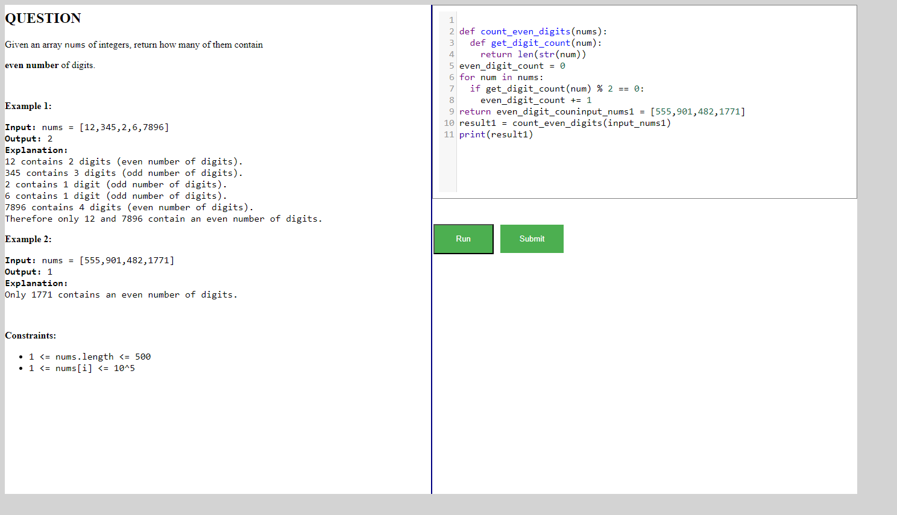

Started
Mar 6, 2024 07:35:24 PM
Ended
Mar 6, 2024 07:49:10 PM
Features Passed
7
Features Failed
3
Features
Scenarios
Steps
Timeline
Tags
| Name | Passed | Failed | Skipped | Others | Passed % |
|---|---|---|---|---|---|
| @homepage | 4 | 0 | 0 | 0 | 100% |
| @datastructures | 7 | 0 | 0 | 0 | 100% |
| @registrationpage | 5 | 3 | 0 | 0 | 62.5% |
| @graphpage | 13 | 1 | 0 | 0 | 92.857% |
| @queuepage | 14 | 0 | 0 | 0 | 100% |
| @treepage | 92 | 0 | 0 | 0 | 100% |
| @LinkedListpage | 37 | 0 | 0 | 0 | 100% |
| @signinpage | 5 | 0 | 0 | 0 | 100% |
| @arraypage | 37 | 4 | 0 | 0 | 90.244% |
| @stackpage | 17 | 0 | 0 | 0 | 100% |
System/Environment
| Name | Value |
|---|---|
| AppName | AutomationPractice |
| user | Pratiksha |
| build | 19045.3570 |
| os | Windows |
-
Graph page features
7:35:31 PM / 00:05:23:424 Fail
Graph page features
03.06.2024 7:35:31 PM 03.06.2024 7:40:55 PM 00:05:23:424 · #test-id=1PassGraph page urlGiven the user has already logged in the home page using for Graphusername password Pratiksha Aggarwal Given The user is on the Graph Page after logged inThen The URL of the page should contain "graph"PassGraph LinkGiven the user has already logged in the home page using for Graphusername password Pratiksha Aggarwal Given The user is on the Graph Page after logged inWhen The user clicks a "Graph" link in graphThen The user should be redirected to "graph/graph" Page in graphPassGraph LinkGiven the user has already logged in the home page using for Graphusername password Pratiksha Aggarwal Given The user is on the Graph Page after logged inWhen The user clicks a "Graph Representations" link in graphThen The user should be redirected to "graph/graph-representations" Page in graphPassThe user clicks Run on Graph Page without entering codeGiven the user has already logged in the home page using for Graphusername password Pratiksha Aggarwal Given The user is on the "graph/graph/" Page in graphAnd The user clicks Try Here button of "Graph" Page in graphAnd The user is on the "tryEditor" Page in graphWhen The user clicks "run" with code "false" in graphThen Ouput Displayed "false" in graphAnd Error message "false" in graphPassThe user clicks Run on Python Editor of Graph by enterering invalid codeGiven the user has already logged in the home page using for Graphusername password Pratiksha Aggarwal Given The user is on the "graph/graph/" Page in graphAnd The user clicks Try Here button of "Graph" Page in graphAnd The user is on the "tryEditor" Page in graphWhen The user writes "invalid" code for "2" in graphAnd The user clicks "run" with code "true" in graphThen Error message "true" in graphPassThe user clicks Run on Python Editor of Graph and entering valid codeGiven the user has already logged in the home page using for Graphusername password Pratiksha Aggarwal Given The user is on the "graph/graph/" Page in graphAnd The user clicks Try Here button of "Graph" Page in graphAnd The user is on the "tryEditor" Page in graphWhen The user writes "valid" code for "1" in graphAnd The user clicks "run" with code "true" in graphThen Ouput Displayed "true" in graphPassTry Here button of Graph in Python PageGiven the user has already logged in the home page using for Graphusername password Pratiksha Aggarwal Given The user is on the "graph/graph/" Page in graphWhen The user clicks Try Here button of "Graph" Page in graphThen The user should be redirected to "https://dsportalapp.herokuapp.com/tryEditor" Page in graphAnd The Page should have Python Editor in graphFailThe user clicks Run on Graph Representations Page without entering codeGiven the user has already logged in the home page using for Graphusername password Pratiksha Aggarwal Given The user is on the "graph/graph-representations/" Page in graphStep skippedAnd The user clicks Try Here button of "Graph Representations" Page in graphStep skippedAnd The user is on the "tryEditor" Page in graphStep skippedWhen The user clicks "run" with code "false" in graphStep skippedThen Ouput Displayed "false" in graphStep skippedAnd Error message "false" in graphStep skippedAppHooks.ApplicationHooks.tearDown(io.cucumber.java.Scenario)The_user_clicks_Run_on_Graph_Representations_Page_without_entering_code PassThe user clicks Run on Python Editor of Graph Representations Page by enterering invalid codeGiven the user has already logged in the home page using for Graph
PassThe user clicks Run on Python Editor of Graph Representations Page by enterering invalid codeGiven the user has already logged in the home page using for Graphusername password Pratiksha Aggarwal Given The user is on the "graph/graph-representations/" Page in graphAnd The user clicks Try Here button of "Graph Representations" Page in graphAnd The user is on the "tryEditor" Page in graphWhen The user writes "invalid" code for "2" in graphAnd The user clicks "run" with code "true" in graphThen Error message "true" in graphPassThe user clicks Run on Python Editor of Graph Representations Page and entering valid codeGiven the user has already logged in the home page using for Graphusername password Pratiksha Aggarwal Given The user is on the "graph/graph-representations/" Page in graphAnd The user clicks Try Here button of "Graph Representations" Page in graphAnd The user is on the "tryEditor" Page in graphWhen The user writes "valid" code for "2" in graphAnd The user clicks "run" with code "true" in graphThen Ouput Displayed "true" in graphPassTry Here button of Graph Representations in Python PageGiven the user has already logged in the home page using for Graphusername password Pratiksha Aggarwal Given The user is on the "graph/graph-representations/" Page in graphWhen The user clicks Try Here button of "Graph Representations" Page in graphThen The user should be redirected to "https://dsportalapp.herokuapp.com/tryEditor" Page in graphAnd The Page should have Python Editor in graphPassPractice question page with linksGiven the user has already logged in the home page using for Graphusername password Pratiksha Aggarwal Given The user is on the "graph/graph/" Page in graphWhen The user clicks a "Practice Questions" link in graphThen The user should be redirected to "graph/practice" Page in graphPassAlert of Graph Page by enterering invalid codeGiven the user has already logged in the home page using for Graphusername password Pratiksha Aggarwal Given The user is on the "graph/graph/" Page in graphAnd The user clicks Try Here button of "Graph" Page in graphAnd The user is on the "tryEditor" Page in graphWhen The user writes "invalid" code for "2" in graphAnd The user clicks "run" with code "true" in graphAnd Error message "true" in graphAnd The user clicks ok on alertThen The user is on the "graph/graph/" Page in graphAnd The user clicks Try Here button of "Graph" Page in graphAnd The user is on the "tryEditor" Page in graphAnd No change in codePassAlert of Graph Representations Page by enterering invalid codeGiven the user has already logged in the home page using for Graphusername password Pratiksha Aggarwal Given The user is on the "graph/graph-representations/" Page in graphAnd The user clicks Try Here button of "Graph Representations" Page in graphAnd The user is on the "tryEditor" Page in graphWhen The user writes "invalid" code for "2" in graphAnd The user clicks "run" with code "true" in graphAnd Error message "true" in graphAnd The user clicks ok on alertThen The user is on the "graph/graph-representations/" Page in graphAnd The user clicks Try Here button of "Graph Representations" Page in graphAnd The user is on the "tryEditor" Page in graphAnd No change in code -
Home Page Features
7:35:31 PM / 00:01:36:108 Pass
Home Page Features
03.06.2024 7:35:31 PM 03.06.2024 7:37:08 PM 00:01:36:108 · #test-id=3PassThe user clicks get started button on DS Algo PortalGiven The user opens DS Algo portal linkWhen The user clicks the Get Started buttonThen The URL of the page should contain "home"And The user should see 6 panes with different data structiresAnd Register Link is displayedAnd Sign In Link is displayedPassThe user clicks Get Started without loggin inGiven The user opens Home Page without loggin inWhen The user clicks any of the Get Started buttons below the data structuresThen It should alert the user with a message You are not logged inPassThe user selects any data structures item from the drop down without loggin inGiven The user opens Home Page without loggin inWhen The user selects any data structures item from the drop down menuThen It should alert the user with a message You are not logged inPassThe user clicks sign in buttonGiven The user opens Home Page without loggin inWhen The user clicks Sign inThen The user should be redirected to Sign in pageAnd The URL of the page should contain "login" -
Data Structures page features
7:35:32 PM / 00:03:04:408 Pass
Data Structures page features
03.06.2024 7:35:32 PM 03.06.2024 7:38:36 PM 00:03:04:408 · #test-id=6PassData Structure page urlGiven The user has already logged in the home page for Data Structure modlule usingusername password Pratiksha Aggarwal Given The user is on the Data Structures Page after logged inThen The URL of the page should contain "data-structures"PassData Structure page urlGiven The user has already logged in the home page for Data Structure modlule usingusername password Pratiksha Aggarwal Given The user is on the Data Structures Page after logged inWhen The user clicks Time Complexity link on data structure pageThen The user should be redirected to Time Complexity page on data structure pagePassData Structure page urlGiven The user has already logged in the home page for Data Structure modlule usingusername password Pratiksha Aggarwal Given The user is on Time Complexity link of the Data Structures Page after logged inWhen The user clicks Try Here button of Time Complexity pageThen The user should be redirected to a page having an Python Editor with a url "https://dsportalapp.herokuapp.com/tryEditor"PassData Structure page urlGiven The user has already logged in the home page for Data Structure modlule usingusername password Pratiksha Aggarwal Given The user is on Time Complexity link of the Data Structures Page after logged inWhen The user clicks Practice Questions link of Time Complexity pageThen The user redirected to the "practice Questions" page of Data StructuresPassData Structure page urlGiven The user has already logged in the home page for Data Structure modlule usingusername password Pratiksha Aggarwal Given The user is on Time Complexity link of the Data Structures Page after logged inWhen The user clicks Practice Questions link of Time Complexity pageThen The user redirected to the "practice Questions" page of Data StructuresAnd the practice page of Data structures is blankPassData Structure page urlGiven The user has already logged in the home page for Data Structure modlule usingusername password Pratiksha Aggarwal Given The user is on Time Complexity link of the Data Structures Page after logged inWhen The user clicks on try here button at the bottom of Time Complexity pageThen The user should be redirected to a page having an Python Editor with a url "https://dsportalapp.herokuapp.com/tryEditor"PassData Structure page urlGiven The user has already logged in the home page for Data Structure modlule usingusername password Pratiksha Aggarwal Given The user is on Time Complexity link of the Data Structures Page after logged inAnd The user clicks on try here button at the bottom of Time Complexity page of Data Structures pageWhen The The user clicks the Run button without entring any code in the Editor for Data Structures pageThen The user stays on the same page of Data Structures page -
Queue page features
7:35:32 PM / 00:05:04:707 Pass
Queue page features
03.06.2024 7:35:32 PM 03.06.2024 7:40:37 PM 00:05:04:707 · #test-id=13PassQueue page urlGiven The user has already logged in the home page usingusername password Pratiksha Aggarwal Given The user is on the Queue Page after logged inThen The URL of the page should contain "queue"PassQueue page check links for topics coveredGiven The user has already logged in the home page usingusername password Pratiksha Aggarwal Given The user is on the Queue Page after logged inThen user gets the following links to explore Queue pageImplementation of Queue in Python Implementation using collections.deque Implementation using array Queue Operations And The count of the links should be 4 on Queue PagePassQueue page check links for topics coveredGiven The user has already logged in the home page usingusername password Pratiksha Aggarwal Given The user is on the Queue Page after logged inWhen The user clicks "Implementation of Queue in Python" button on Queue PageThen The user should be directed to "lists" on Queue PagePassQueue page check links for topics coveredGiven The user has already logged in the home page usingusername password Pratiksha Aggarwal Given The user is on the Queue Page after logged inWhen The user clicks "Implementation using collections.deque" button on Queue PageThen The user should be directed to "collections" on Queue PagePassQueue page check links for topics coveredGiven The user has already logged in the home page usingusername password Pratiksha Aggarwal Given The user is on the Queue Page after logged inWhen The user clicks "Implementation using array" button on Queue PageThen The user should be directed to "array" on Queue PagePassQueue page check links for topics coveredGiven The user has already logged in the home page usingusername password Pratiksha Aggarwal Given The user is on the Queue Page after logged inWhen The user clicks "Queue Operations" button on Queue PageThen The user should be directed to "QueueOp" on Queue PagePassQueue page check for try here and run button is displayed for Queue OperationsGiven The user has already logged in the home page usingusername password Pratiksha Aggarwal Given The user is on the Queue Page after logged inWhen The user clicks "Queue Operations" link of Queue Page followed by "Try here" linkThen The user should be redirected to a page having an tryEditor of Queue pageAnd the page should have a Run button to test of Queue pagePassQueue page check for try here and run button is displayed for listsGiven The user has already logged in the home page usingusername password Pratiksha Aggarwal Given The user is on the Queue Page after logged inWhen The user clicks "Implementation of Queue in Python" link of Queue Page followed by "Try here" linkThen The user should be redirected to a page having an tryEditor of Queue pageAnd the page should have a Run button to test of Queue pagePassQueue page check for try here and run button is displayed for array OperationsGiven The user has already logged in the home page usingusername password Pratiksha Aggarwal Given The user is on the Queue Page after logged inWhen The user clicks "Implementation using array" link of Queue Page followed by "Try here" linkThen The user should be redirected to a page having an tryEditor of Queue pageAnd the page should have a Run button to test of Queue pagePassQueue page check for try here and run button is displayed for collections OperationsGiven The user has already logged in the home page usingusername password Pratiksha Aggarwal Given The user is on the Queue Page after logged inWhen The user clicks "Implementation using collections.deque" link of Queue Page followed by "Try here" linkThen The user should be redirected to a page having an tryEditor of Queue pageAnd the page should have a Run button to test of Queue pagePassValidating Try Editor part of Queue PageGiven The user has already logged in the home page usingusername password Pratiksha Aggarwal Given The user is on the Queue Page after logged inWhen The user clicks "Queue Operations" link of Queue Page followed by "Try here" linkAnd The user writes the invalid python code on Queue PageAnd The user clicks the run button on Queue PageThen The User is able to see the error message in pop up window on Queue PagePassValidating Try Editor part of Queue PageGiven The user has already logged in the home page usingusername password Pratiksha Aggarwal Given The user is on the Queue Page after logged inWhen The user clicks "Queue Operations" link of Queue Page followed by "Try here" linkAnd The user writes the invalid python code on Queue PageAnd The user clicks the run button on Queue PageAnd The user click the ok button in the alert window on Queue PageThen The user should be redirected to a page having an tryEditor of Queue pagePassValidating Try Editor part of Queue PageGiven The user has already logged in the home page usingusername password Pratiksha Aggarwal Given The user is on the Queue Page after logged inWhen The user clicks "Queue Operations" link of Queue Page followed by "Try here" linkAnd The user writes the valid python code on Queue PageAnd The user clicks the run button on Queue PageThen User is able to see the correct output in console on Queue PagePassValidating Try Editor part of Queue Page Reading from excel sheetPassValidating Try Editor part of Queue Page Reading from excel sheetGiven The user has already logged in the home page usingusername password Pratiksha Aggarwal Given The user is on the Queue Page after logged inWhen The user clicks "Queue Operations" link of Queue Page followed by "Try here" linkAnd The user writes the valid python code on Queue Page from "PythonCode" and 0And The user clicks the run button on Queue PageThen User is able to see the expected output in console on Queue Page -
Register Page Features
7:35:32 PM / 00:02:58:336 Fail
Register Page Features
03.06.2024 7:35:32 PM 03.06.2024 7:38:30 PM 00:02:58:336 · #test-id=17PassAlll fields empty. Username ErrorGiven The User has clicked on the "register" button from the home page for registerGiven The user is on the new user registration pageWhen The user clicks "register"Then The error "Please fill out this field." appears below "uName"PassArray page urlGiven The User has clicked on the "register" button from the home page for registerGiven The user is on the new user registration pageWhen The user fills "uName" with "Hiranmayee"And The user clicks "register"Then The error "Please fill out this field." appears below "password"PassArray page urlGiven The User has clicked on the "register" button from the home page for registerGiven The user is on the new user registration pageWhen The user fills "uName" with "Hiranmayee"And The user fills "password" with "Nidugondi"And The user clicks "register"Then The error "Please fill out this field." appears below "pwdConfirm"FailArray page urlGiven The User has clicked on the "register" button from the home page for registerGiven The user is on the new user registration pageWhen The user fills "uName" with "Hiranmayee "And The user clicks "register"Then The error "invalid data" appears below "uName"AppHooks.ApplicationHooks.tearDown(io.cucumber.java.Scenario)Array_page_url FailArray page urlGiven The User has clicked on the "register" button from the home page for registerGiven The user is on the new user registration pageWhen The user fills "uName" with "Hiranmayee"And The user fills "password" with "Nidugondi "And The user clicks "register"Then The error "invalid data" appears below "password"AppHooks.ApplicationHooks.tearDown(io.cucumber.java.Scenario)Array_page_url
FailArray page urlGiven The User has clicked on the "register" button from the home page for registerGiven The user is on the new user registration pageWhen The user fills "uName" with "Hiranmayee"And The user fills "password" with "Nidugondi "And The user clicks "register"Then The error "invalid data" appears below "password"AppHooks.ApplicationHooks.tearDown(io.cucumber.java.Scenario)Array_page_url FailArray page urlGiven The User has clicked on the "register" button from the home page for registerGiven The user is on the new user registration pageWhen The user fills "uName" with "Hiranmayee"And The user fills "password" with "Nid"And The user clicks "register"Then The error "invalid data" appears below "password"AppHooks.ApplicationHooks.tearDown(io.cucumber.java.Scenario)Array_page_url
FailArray page urlGiven The User has clicked on the "register" button from the home page for registerGiven The user is on the new user registration pageWhen The user fills "uName" with "Hiranmayee"And The user fills "password" with "Nid"And The user clicks "register"Then The error "invalid data" appears below "password"AppHooks.ApplicationHooks.tearDown(io.cucumber.java.Scenario)Array_page_url PassArray page urlGiven The User has clicked on the "register" button from the home page for registerGiven The user is on the new user registration pageWhen The user fills "uName" with "Hiranmayee"And The user fills "password" with "Nidugondi"And The user fills "pwdConfirm" with "Nidugondi123"And The user clicks "register"Then The "warning" message "password_mismatch:The two password fields didn�t match." appearsPassArray page urlGiven The User has clicked on the "register" button from the home page for registerGiven The user is on the new user registration pageWhen The user fills "uName" with "random"And The user fills "password" with "Nidugondi"And The user fills "pwdConfirm" with "Nidugondi"And The user clicks "register"Then The "signIn" message "New Account Created. You are logged in as" appearsAnd The URL of the page should contain "home"
PassArray page urlGiven The User has clicked on the "register" button from the home page for registerGiven The user is on the new user registration pageWhen The user fills "uName" with "Hiranmayee"And The user fills "password" with "Nidugondi"And The user fills "pwdConfirm" with "Nidugondi123"And The user clicks "register"Then The "warning" message "password_mismatch:The two password fields didn�t match." appearsPassArray page urlGiven The User has clicked on the "register" button from the home page for registerGiven The user is on the new user registration pageWhen The user fills "uName" with "random"And The user fills "password" with "Nidugondi"And The user fills "pwdConfirm" with "Nidugondi"And The user clicks "register"Then The "signIn" message "New Account Created. You are logged in as" appearsAnd The URL of the page should contain "home" -
Array page features
7:35:32 PM / 00:09:42:125 Fail
Array page features
03.06.2024 7:35:32 PM 03.06.2024 7:45:14 PM 00:09:42:125 · #test-id=20PassArray page urlGiven the user has already logged in the home page using for Arrayusername password Pratiksha Aggarwal Given The user is on the Array Page after logged inThen The URL of the page should contain "array"PassArrays in Python LinkGiven the user has already logged in the home page using for Arrayusername password Pratiksha Aggarwal Given The user is on the Array Page after logged inWhen The user clicks a "Arrays in Python" linkThen The user should be redirected to "arrays-in-python" PagePassTry Here button of Array in Python PageGiven the user has already logged in the home page using for Arrayusername password Pratiksha Aggarwal Given The user is on the "array/applications-of-array/" PageWhen The user clicks Try Here button of "Array in Python" PageThen The user should be redirected to "https://dsportalapp.herokuapp.com/tryEditor" PageAnd The Page should have Python EditorPassArrays Using List link from Array in Python PageGiven the user has already logged in the home page using for Arrayusername password Pratiksha Aggarwal Given The user is on the "array/arrays-in-python/" PageWhen The user clicks a "Arrays Using List" linkThen The user should be redirected to "arrays-using-list" PagePassTry Here button of Array Using List PageGiven the user has already logged in the home page using for Arrayusername password Pratiksha Aggarwal Given The user is on the "array/arrays-using-list" PageWhen The user clicks Try Here button of "Array Using List" PageThen The user should be redirected to "https://dsportalapp.herokuapp.com/tryEditor" PageAnd The Page should have Python EditorPassBasic Operations in Lists Page from Array Using List PageGiven the user has already logged in the home page using for Arrayusername password Pratiksha Aggarwal Given The user is on the "array/arrays-using-list" PageWhen The user clicks a "Basic Operations in Lists" linkThen The user should be redirected to "basic-operations-in-lists" PagePassTry Here button of Basic Operations in Lists PageGiven the user has already logged in the home page using for Arrayusername password Pratiksha Aggarwal Given The user is on the "array/basic-operations-in-lists" PageWhen The user clicks Try Here button of "Basic Operations in Lists" PageThen The user should be redirected to "https://dsportalapp.herokuapp.com/tryEditor" PageAnd The Page should have Python EditorPassApplications of Array Page from Basic Operations in Lists PageGiven the user has already logged in the home page using for Arrayusername password Pratiksha Aggarwal Given The user is on the "array/basic-operations-in-lists" PageWhen The user clicks a "Applications of Array" linkThen The user should be redirected to "applications-of-array" PagePassPractice question page with linksGiven the user has already logged in the home page using for Arrayusername password Pratiksha Aggarwal Given The user is on the "array/applications-of-array/" PageWhen The user clicks a "Practice Questions" linkThen The user should be redirected to "array/practice" PageAnd user gets the following links to explore Practice pageSearch the array Max Consecutive Ones Find Numbers with Even Number of Digits Squares of a Sorted Array And The count of the practice links should be 4PassElements on Practice PageGiven the user has already logged in the home page using for Arrayusername password Pratiksha Aggarwal Given The user is on the "array/practice" PageWhen The user clicks a "Search the array" linkThen The Page should have following elementsquestion pythonEditor run submit PassElements on Practice PageGiven the user has already logged in the home page using for Arrayusername password Pratiksha Aggarwal Given The user is on the "array/practice" PageWhen The user clicks a "Max Consecutive Ones" linkThen The Page should have following elementsquestion pythonEditor run submit PassElements on Practice PageGiven the user has already logged in the home page using for Arrayusername password Pratiksha Aggarwal Given The user is on the "array/practice" PageWhen The user clicks a "Find Numbers with Even Number of Digits" linkThen The Page should have following elementsquestion pythonEditor run submit PassElements on Practice PageGiven the user has already logged in the home page using for Arrayusername password Pratiksha Aggarwal Given The user is on the "array/practice" PageWhen The user clicks a "Squares of a Sorted Array" linkThen The Page should have following elementsquestion pythonEditor run submit PassThe user clicks Run on Python Editor of Array In Python Page without entering codeGiven the user has already logged in the home page using for Arrayusername password Pratiksha Aggarwal Given The user is on the "array/arrays-in-python/" PageAnd The user clicks Try Here button of "Arrays In Python" PageAnd The user is on the "tryEditor" PageWhen The user clicks "run" with code "false"Then Ouput Displayed "false"And Error message "false"PassThe user clicks Run on Python Editor of Array In Python Page by enterering invalid codeGiven the user has already logged in the home page using for Arrayusername password Pratiksha Aggarwal Given The user is on the "array/arrays-in-python/" PageAnd The user clicks Try Here button of "Arrays In Python" PageAnd The user is on the "tryEditor" PageWhen The user writes "invalid" code for "1"And The user clicks "run" with code "true"Then Error message "true"PassThe user clicks Run on Python Editor of Array In Python Page and entering valid codeGiven the user has already logged in the home page using for Arrayusername password Pratiksha Aggarwal Given The user is on the "array/arrays-in-python/" PageAnd The user clicks Try Here button of "Arrays In Python" PageAnd The user is on the "tryEditor" PageWhen The user writes "valid" code for "1"And The user clicks "run" with code "true"Then Ouput Displayed "true"PassThe user clicks Run on Python Editor of Arrays Using List Page without entering codeGiven the user has already logged in the home page using for Arrayusername password Pratiksha Aggarwal Given The user is on the "array/arrays-using-list/" PageAnd The user clicks Try Here button of "Arrays Using List" PageAnd The user is on the "tryEditor" PageWhen The user clicks "run" with code "false"Then Ouput Displayed "false"And Error message "false"PassThe user clicks Run on Python Editor of Arrays Using List Page by enterering invalid codeGiven the user has already logged in the home page using for Arrayusername password Pratiksha Aggarwal Given The user is on the "array/arrays-using-list/" PageAnd The user clicks Try Here button of "Arrays Using List" PageAnd The user is on the "tryEditor" PageWhen The user writes "invalid" code for "1"And The user clicks "run" with code "true"Then Error message "true"PassThe user clicks Run on Python Editor of Arrays Using List Page and entering valid codeGiven the user has already logged in the home page using for Arrayusername password Pratiksha Aggarwal Given The user is on the "array/arrays-using-list/" PageAnd The user clicks Try Here button of "Arrays Using List" PageAnd The user is on the "tryEditor" PageWhen The user writes "valid" code for "1"And The user clicks "run" with code "true"Then Ouput Displayed "true"PassThe user clicks Run on Python Editor of Applications of Array Page without entering codeGiven the user has already logged in the home page using for Arrayusername password Pratiksha Aggarwal Given The user is on the "array/applications-of-array/" PageAnd The user clicks Try Here button of "Applications of Array" PageAnd The user is on the "tryEditor" PageWhen The user clicks "run" with code "false"Then Ouput Displayed "false"And Error message "false"PassThe user clicks Run on Python Editor of Applications of Array Page by enterering invalid codeGiven the user has already logged in the home page using for Arrayusername password Pratiksha Aggarwal Given The user is on the "array/applications-of-array/" PageAnd The user clicks Try Here button of "Applications of Array" PageAnd The user is on the "tryEditor" PageWhen The user writes "invalid" code for "1"And The user clicks "run" with code "true"Then Error message "true"PassThe user clicks Run on Python Editor of Applications of Array Page and entering valid codeGiven the user has already logged in the home page using for Arrayusername password Pratiksha Aggarwal Given The user is on the "array/applications-of-array/" PageAnd The user clicks Try Here button of "Applications of Array" PageAnd The user is on the "tryEditor" PageWhen The user writes "valid" code for "1"And The user clicks "run" with code "true"Then Ouput Displayed "true"PassThe user clicks Run on Python Editor of Basic Operations in Lists Page without entering codeGiven the user has already logged in the home page using for Arrayusername password Pratiksha Aggarwal Given The user is on the "array/basic-operations-in-lists/" PageAnd The user clicks Try Here button of "Basic Operations in Lists" PageAnd The user is on the "tryEditor" PageWhen The user clicks "run" with code "fales"Then Ouput Displayed "false"And Error message "false"PassThe user clicks Run on Python Editor of Basic Operations in Lists Page by enterering invalid codeGiven the user has already logged in the home page using for Arrayusername password Pratiksha Aggarwal Given The user is on the "array/basic-operations-in-lists/" PageAnd The user clicks Try Here button of "Basic Operations in Lists" PageAnd The user is on the "tryEditor" PageWhen The user writes "invalid" code for "1"And The user clicks "run" with code "true"Then Error message "true"PassThe user clicks Run on Python Editor of Basic Operations in Lists Page and entering valid codeGiven the user has already logged in the home page using for Arrayusername password Pratiksha Aggarwal Given The user is on the "array/basic-operations-in-lists/" PageAnd The user clicks Try Here button of "Basic Operations in Lists" PageAnd The user is on the "tryEditor" PageWhen The user writes "valid" code for "1"And The user clicks "run" with code "true"Then Ouput Displayed "true"PassThe user clicks Run on Python Editor of Search the Array Practice Page without entering codeGiven the user has already logged in the home page using for Arrayusername password Pratiksha Aggarwal Given The user is on the "question/1" PageWhen The user clicks "run" with code "false"Then Error message "false"And Ouput Displayed "false"PassThe user clicks Run on Python Editor of Search the Array Practice Page by enterering invalid codeGiven the user has already logged in the home page using for Arrayusername password Pratiksha Aggarwal Given The user is on the "question/1" PageWhen The user writes "invalid" code for "1"And The user clicks "run" with code "true"Then Error message "true"PassThe user clicks Run on Python Editor of Search the Array Practice Page and entering valid codeGiven the user has already logged in the home page using for Arrayusername password Pratiksha Aggarwal Given The user is on the "question/1" PageWhen The user writes "valid" code for "1"And The user clicks "run" with code "true"Then Error message "false"Then Ouput Displayed "true"FailThe user clicks Submit on Python Editor of Search the Array Practice Page and entering valid codeGiven the user has already logged in the home page using for Arrayusername password Pratiksha Aggarwal Given The user is on the "question/1" PageWhen The user writes "valid" code for "1"And The user clicks "submit" with code "true"Then The user see an error message "Error occurred during submission"AppHooks.ApplicationHooks.tearDown(io.cucumber.java.Scenario)The_user_clicks_Submit_on_Python_Editor_of_Search_the_Array_Practice_Page_and_entering_valid_code PassThe user clicks Run on Python Editor of Max Consecutive Ones Practice Page without entering codeGiven the user has already logged in the home page using for Array
PassThe user clicks Run on Python Editor of Max Consecutive Ones Practice Page without entering codeGiven the user has already logged in the home page using for Arrayusername password Pratiksha Aggarwal Given The user is on the "question/2" PageWhen The user clicks "run" with code "false"Then Error message "false"And Ouput Displayed "false"PassThe user clicks Run on Python Editor of Max Consecutive Ones Practice Page by enterering invalid codeGiven the user has already logged in the home page using for Arrayusername password Pratiksha Aggarwal Given The user is on the "question/2" PageWhen The user writes "invalid" code for "2"And The user clicks "run" with code "true"Then Error message "true"PassThe user clicks Run on Python Editor of Max Consecutive Ones Practice Page and entering valid codeGiven the user has already logged in the home page using for Arrayusername password Pratiksha Aggarwal Given The user is on the "question/2" PageWhen The user writes "valid" code for "2"And The user clicks "run" with code "true"Then Error message "false"Then Ouput Displayed "true"FailThe user clicks Submit on Python Editor of Max Consecutive Ones Practice Page and entering valid codeGiven the user has already logged in the home page using for Arrayusername password Pratiksha Aggarwal Given The user is on the "question/2" PageWhen The user writes "valid" code for "2"And The user clicks "submit" with code "true"Then The user see an error message "Error occurred during submission"AppHooks.ApplicationHooks.tearDown(io.cucumber.java.Scenario)The_user_clicks_Submit_on_Python_Editor_of_Max_Consecutive_Ones_Practice_Page_and_entering_valid_code PassThe user clicks Run on Python Editor of Find Numbers with Even Number of Digits Practice Page without entering codeGiven the user has already logged in the home page using for Array
PassThe user clicks Run on Python Editor of Find Numbers with Even Number of Digits Practice Page without entering codeGiven the user has already logged in the home page using for Arrayusername password Pratiksha Aggarwal Given The user is on the "question/3" PageWhen The user clicks "run" with code "false"Then Error message "false"And Ouput Displayed "false"PassThe user clicks Run on Python Editor of Find Numbers with Even Number of Digits Practice Page by enterering invalid codeGiven the user has already logged in the home page using for Arrayusername password Pratiksha Aggarwal Given The user is on the "question/3" PageWhen The user writes "invalid" code for "3"And The user clicks "run" with code "true"Then Error message "true"PassThe user clicks Run on Python Editor of Find Numbers with Even Number of Digits Practice Page and entering valid codeGiven the user has already logged in the home page using for Arrayusername password Pratiksha Aggarwal Given The user is on the "question/3" PageWhen The user writes "valid" code for "3"And The user clicks "run" with code "true"Then Error message "false"Then Ouput Displayed "true"FailThe user clicks Submit on Python Editor of Find Numbers with Even Number of Digits Practice Page and entering valid codeGiven the user has already logged in the home page using for Arrayusername password Pratiksha Aggarwal Given The user is on the "question/3" PageWhen The user writes "valid" code for "3"And The user clicks "submit" with code "true"Then The user see an error message "Error occurred during submission"AppHooks.ApplicationHooks.tearDown(io.cucumber.java.Scenario)The_user_clicks_Submit_on_Python_Editor_of_Find_Numbers_with_Even_Number_of_Digits_Practice_Page_and_entering_valid_code PassThe user clicks Run on Python Editor of Squares of a Sorted Array Practice Page without entering codeGiven the user has already logged in the home page using for Array
PassThe user clicks Run on Python Editor of Squares of a Sorted Array Practice Page without entering codeGiven the user has already logged in the home page using for Arrayusername password Pratiksha Aggarwal Given The user is on the "question/4" PageWhen The user clicks "run" with code "false"Then Error message "false"And Ouput Displayed "false"PassThe user clicks Run on Python Editor of Squares of a Sorted Array Practice Page by enterering invalid codeGiven the user has already logged in the home page using for Arrayusername password Pratiksha Aggarwal Given The user is on the "question/4" PageWhen The user writes "invalid" code for "4"And The user clicks "run" with code "true"Then Error message "true"PassThe user clicks Run on Python Editor of Squares of a Sorted Array Practice Page and entering valid codeGiven the user has already logged in the home page using for Arrayusername password Pratiksha Aggarwal Given The user is on the "question/4" PageWhen The user writes "valid" code for "4"And The user clicks "run" with code "true"Then Error message "false"Then Ouput Displayed "true"FailThe user clicks Submit on Python Editor of Squares of a Sorted Array Practice Page and entering valid codeGiven the user has already logged in the home page using for Arrayusername password Pratiksha Aggarwal Given The user is on the "question/4" PageWhen The user writes "valid" code for "4"And The user clicks "submit" with code "true"Then The user see an error message "Error occurred during submission"AppHooks.ApplicationHooks.tearDown(io.cucumber.java.Scenario)The_user_clicks_Submit_on_Python_Editor_of_Squares_of_a_Sorted_Array_Practice_Page_and_entering_valid_code -
Sign In Page Features
7:35:32 PM / 00:02:18:968 Pass
Sign In Page Features
03.06.2024 7:35:32 PM 03.06.2024 7:37:51 PM 00:02:18:968 · #test-id=25PassLogging in with correct credentialsGiven The User has clicked on the "signin" button from the home pageGiven The user is in the Sign In pageWhen User eneters the username "Pratiksha"And The user eneters the password as "Aggarwal"And user clicks on login buttonAnd The user is alerted with message that "You are logged in"And Sign Out link is displayedAnd The URL of the page should contain "home"PassLogging in with blank credentialsGiven The User has clicked on the "signin" button from the home pageGiven The user is in the Sign In pageWhen The user clicks login button after leaving the username textbox and password textbox blankThen The error message "Please fill out this field." appears below Username textboxPassLogging in with incorrect credentialsGiven The User has clicked on the "signin" button from the home pageGiven The user is in the Sign In pageWhen User eneters the username "Incorrect"And The user eneters the password as "Wrong"And user clicks on login buttonAnd The user is alerted with message that "Invalid Username and Password"PassLogging in with blank passwordGiven The User has clicked on the "signin" button from the home pageGiven The user is in the Sign In pageWhen The user clicks login button after entring the username "Pratiksha" and leaving password textbox blankThen The error message "Please fill out this field." appears below Password textboxPassLogging in with blank usernameGiven The User has clicked on the "signin" button from the home pageGiven The user is in the Sign In pageWhen The user clicks login button after entring the username blank and password "Aggarwal"Then The error message "Please fill out this field." appears below Username textbox -
LinkedList feature
7:35:32 PM / 00:08:18:474 Pass
LinkedList feature
03.06.2024 7:35:32 PM 03.06.2024 7:43:51 PM 00:08:18:474 · #test-id=29PassLinked List page urlGiven The user has already logged in the home page using LinkedListusername password Pratiksha Aggarwal Given The user is on the LinkedList Page after logged inThen The URL of the page should contain "linked-list"PassIntroduction: The user is in the "linked-list" page and click on IntroductionGiven The user has already logged in the home page using LinkedListusername password Pratiksha Aggarwal Given The user clicks Introduction buttonThen The URL of the page should contain "introduction"PassIntroduction: The user clicks Try Here buttonGiven The user has already logged in the home page using LinkedListusername password Pratiksha Aggarwal Given The user clicks Introduction buttonWhen The user clicks on Try Here buttonThen The user is on the page having Editor and Run buttonPassIntroduction: The user is on the tryEditor page writes Valid python codeGiven The user has already logged in the home page using LinkedListusername password Pratiksha Aggarwal Given The user clicks Introduction buttonAnd The user is on the tryEditor page of Linked List pageWhen The User writes Valid python code for Linked ListAnd click run button in Linked ListThen User is able to see the output in console in Linked ListPassIntroduction: The user is on the tryEditor page writes InValid python codeGiven The user has already logged in the home page using LinkedListusername password Pratiksha Aggarwal Given The user clicks Introduction buttonAnd The user is on the tryEditor page of Linked List pageWhen The User writes InValid python code for Linked List pageAnd click run button in Linked ListThen User is able to see the error msg in pop up window for Linked ListPassIntroduction: The user is on the editor page withAlert error message and click the ok button in the alert windowGiven The user has already logged in the home page using LinkedListusername password Pratiksha Aggarwal Given The user clicks Introduction buttonAnd The user clicks on Try Here buttonAnd The User writes InValid python code for Linked List pageAnd The user is on the editor page withAlert error message for Linked ListWhen The user click the ok button in the alert window for Linked ListThen The user is on the page having Editor and Run buttonPassCreating Linked List: The user is in the "linked-list" page and click on Creating Linked LIstGiven The user has already logged in the home page using LinkedListusername password Pratiksha Aggarwal Given The user clicks creating-linked-list buttonThen The URL of the page should contain "creating-linked-list"PassCreating Linked List: The user clicks Try Here buttonGiven The user has already logged in the home page using LinkedListusername password Pratiksha Aggarwal Given The user clicks creating-linked-list buttonWhen The user clicks on Try Here buttonThen The user is on the page having Editor and Run buttonPassCreating Linked List: The user is on the tryEditor page writes Valid python codeGiven The user has already logged in the home page using LinkedListusername password Pratiksha Aggarwal Given The user clicks creating-linked-list buttonAnd The user is on the tryEditor page of Linked List pageWhen The User writes Valid python code for Linked ListAnd click run button in Linked ListThen User is able to see the output in console in Linked ListPassCreating Linked List: The user is on the tryEditor page writes InValid python codeGiven The user has already logged in the home page using LinkedListusername password Pratiksha Aggarwal Given The user clicks creating-linked-list buttonAnd The user is on the tryEditor page of Linked List pageWhen The User writes InValid python code for Linked List pageAnd click run button in Linked ListThen User is able to see the error msg in pop up window for Linked ListPassCreating Linked List: The user is on the editor page withAlert error message and click the ok button in the alert windowGiven The user has already logged in the home page using LinkedListusername password Pratiksha Aggarwal Given The user clicks creating-linked-list buttonAnd The user clicks on Try Here buttonAnd The User writes InValid python code for Linked List pageAnd The user is on the editor page withAlert error message for Linked ListWhen The user click the ok button in the alert window for Linked ListThen The user is on the page having Editor and Run buttonPassCreating Linked List: The user is in the "linked-list" page and click on Types of Linked ListGiven The user has already logged in the home page using LinkedListusername password Pratiksha Aggarwal Given The user clicksbutton Then The URL of the page should contain "types-of-linked-list"PassCreating Linked List: The user clicks Try Here buttonGiven The user has already logged in the home page using LinkedListusername password Pratiksha Aggarwal Given The user clicksbutton When The user clicks on Try Here buttonThen The user is on the page having Editor and Run buttonPassCreating Linked List: The user is on the tryEditor page writes Valid python codeGiven The user has already logged in the home page using LinkedListusername password Pratiksha Aggarwal Given The user clicksbutton And The user is on the tryEditor page of Linked List pageWhen The User writes Valid python code for Linked ListAnd click run button in Linked ListThen User is able to see the output in console in Linked ListPassCreating Linked List: The user is on the tryEditor page writes InValid python codeGiven The user has already logged in the home page using LinkedListusername password Pratiksha Aggarwal Given The user clicksbutton And The user is on the tryEditor page of Linked List pageWhen The User writes InValid python code for Linked List pageAnd click run button in Linked ListThen User is able to see the error msg in pop up window for Linked ListPassCreating Linked List: The user is on the editor page withAlert error message and click the ok button in the alert windowGiven The user has already logged in the home page using LinkedListusername password Pratiksha Aggarwal Given The user clicksbutton And The user clicks on Try Here buttonAnd The User writes InValid python code for Linked List pageAnd The user is on the editor page withAlert error message for Linked ListWhen The user click the ok button in the alert window for Linked ListThen The user is on the page having Editor and Run buttonPassCreating Linked List: The user is in the "linked-list" page and click on "Implement Linked List in Python"Given The user has already logged in the home page using LinkedListusername password Pratiksha Aggarwal Given The user clicksbutton Then The URL of the page should contain "implement-linked-list-in-python"PassCreating Linked List: The user clicks Try Here buttonGiven The user has already logged in the home page using LinkedListusername password Pratiksha Aggarwal Given The user clicksbutton When The user clicks on Try Here buttonThen The user is on the page having Editor and Run buttonPassCreating Linked List: The user is on the tryEditor page writes Valid python codeGiven The user has already logged in the home page using LinkedListusername password Pratiksha Aggarwal Given The user clicksbutton And The user is on the tryEditor page of Linked List pageWhen The User writes Valid python code for Linked ListAnd click run button in Linked ListThen User is able to see the output in console in Linked ListPassCreating Linked List: The user is on the tryEditor page writes InValid python codeGiven The user has already logged in the home page using LinkedListusername password Pratiksha Aggarwal Given The user clicksbutton And The user is on the tryEditor page of Linked List pageWhen The User writes InValid python code for Linked List pageAnd click run button in Linked ListThen User is able to see the error msg in pop up window for Linked ListPassCreating Linked List: The user is on the editor page withAlert error message and click the ok button in the alert windowGiven The user has already logged in the home page using LinkedListusername password Pratiksha Aggarwal Given The user clicksbutton And The user clicks on Try Here buttonAnd The User writes InValid python code for Linked List pageAnd The user is on the editor page withAlert error message for Linked ListWhen The user click the ok button in the alert window for Linked ListThen The user is on the page having Editor and Run buttonPassCreating Linked List: The user is in the "linked-list" page and click on "Traversal"Given The user has already logged in the home page using LinkedListusername password Pratiksha Aggarwal Given The user clicksbutton Then The URL of the page should contain "traversal"PassCreating Linked List: The user clicks Try Here buttonGiven The user has already logged in the home page using LinkedListusername password Pratiksha Aggarwal Given The user clicksbutton When The user clicks on Try Here buttonThen The user is on the page having Editor and Run buttonPassCreating Linked List: The user is on the tryEditor page writes Valid python codeGiven The user has already logged in the home page using LinkedListusername password Pratiksha Aggarwal Given The user clicksbutton And The user is on the tryEditor page of Linked List pageWhen The User writes Valid python code for Linked ListAnd click run button in Linked ListThen User is able to see the output in console in Linked ListPassCreating Linked List: The user is on the tryEditor page writes InValid python codeGiven The user has already logged in the home page using LinkedListusername password Pratiksha Aggarwal Given The user clicksbutton And The user is on the tryEditor page of Linked List pageWhen The User writes InValid python code for Linked List pageAnd click run button in Linked ListThen User is able to see the error msg in pop up window for Linked ListPassCreating Linked List: The user is on the editor page withAlert error message and click the ok button in the alert windowGiven The user has already logged in the home page using LinkedListusername password Pratiksha Aggarwal Given The user clicksbutton And The user clicks on Try Here buttonAnd The User writes InValid python code for Linked List pageAnd The user is on the editor page withAlert error message for Linked ListWhen The user click the ok button in the alert window for Linked ListThen The user is on the page having Editor and Run buttonPassCreating Linked List: The user is in the "linked-list" page and click on "Insertion"Given The user has already logged in the home page using LinkedListusername password Pratiksha Aggarwal Given The user clicksbutton Then The URL of the page should contain "insertion-in-linked-list"PassCreating Linked List: The user clicks Try Here buttonGiven The user has already logged in the home page using LinkedListusername password Pratiksha Aggarwal Given The user clicksbutton When The user clicks on Try Here buttonThen The user is on the page having Editor and Run buttonPassCreating Linked List: The user is on the tryEditor page writes Valid python codeGiven The user has already logged in the home page using LinkedListusername password Pratiksha Aggarwal Given The user clicksbutton And The user is on the tryEditor page of Linked List pageWhen The User writes Valid python code for Linked ListAnd click run button in Linked ListThen User is able to see the output in console in Linked ListPassCreating Linked List: The user is on the tryEditor page writes InValid python codeGiven The user has already logged in the home page using LinkedListusername password Pratiksha Aggarwal Given The user clicksbutton And The user is on the tryEditor page of Linked List pageWhen The User writes InValid python code for Linked List pageAnd click run button in Linked ListThen User is able to see the error msg in pop up window for Linked ListPassCreating Linked List: The user is on the editor page withAlert error message and click the ok button in the alert windowGiven The user has already logged in the home page using LinkedListusername password Pratiksha Aggarwal Given The user clicksbutton And The user clicks on Try Here buttonAnd The User writes InValid python code for Linked List pageAnd The user is on the editor page withAlert error message for Linked ListWhen The user click the ok button in the alert window for Linked ListThen The user is on the page having Editor and Run buttonPassCreating Linked List: The user is in the "linked-list" page and click on "Deletion"Given The user has already logged in the home page using LinkedListusername password Pratiksha Aggarwal Given The user clicksbutton Then The URL of the page should contain "deletion-in-linked-list"PassCreating Linked List: The user clicks Try Here buttonGiven The user has already logged in the home page using LinkedListusername password Pratiksha Aggarwal Given The user clicksbutton When The user clicks on Try Here buttonThen The user is on the page having Editor and Run buttonPassCreating Linked List: The user is on the tryEditor page writes Valid python codeGiven The user has already logged in the home page using LinkedListusername password Pratiksha Aggarwal Given The user clicksbutton And The user is on the tryEditor page of Linked List pageWhen The User writes Valid python code for Linked ListAnd click run button in Linked ListThen User is able to see the output in console in Linked ListPassCreating Linked List: The user is on the tryEditor page writes InValid python codeGiven The user has already logged in the home page using LinkedListusername password Pratiksha Aggarwal Given The user clicksbutton And The user is on the tryEditor page of Linked List pageWhen The User writes InValid python code for Linked List pageAnd click run button in Linked ListThen User is able to see the error msg in pop up window for Linked ListPassCreating Linked List: The user is on the editor page withAlert error message and click the ok button in the alert windowGiven The user has already logged in the home page using LinkedListusername password Pratiksha Aggarwal Given The user clicksbutton And The user clicks on Try Here buttonAnd The User writes InValid python code for Linked List pageAnd The user is on the editor page withAlert error message for Linked ListWhen The user click the ok button in the alert window for Linked ListThen The user is on the page having Editor and Run buttonPassCreating Linked List: The user is in the "linked-list" page and click on "Practice Questions"Given The user has already logged in the home page using LinkedListusername password Pratiksha Aggarwal Given The user clicksbutton And The user clicksbutton for LL Then The URL of the page should contain "practice" -
Stack page features
7:37:09 PM / 00:04:31:826 Pass
Stack page features
03.06.2024 7:37:09 PM 03.06.2024 7:41:41 PM 00:04:31:826 · #test-id=277PassStack page urlGiven The user has already logged in the home page using stackusername password Pratiksha Aggarwal Given The user is on the Stack Page after logged inThen The URL of the page should contain "stack"PassThe user is in the "Operations in Stack" pageGiven The user has already logged in the home page using stackusername password Pratiksha Aggarwal Given The user clicks Operations in Stack buttonThen The URL of the page should contain "operations-in-stack"PassOperation in Stack: The user clicks Try Here buttonGiven The user has already logged in the home page using stackusername password Pratiksha Aggarwal Given The user is in the Operations in Stack pageWhen The user clicks Try Here buttonThen The user should be redirected to a page having an tryEditor with a Run button to testPassOperation in Stack: The user is on the tryEditor page writes Valid python codeGiven The user has already logged in the home page using stackusername password Pratiksha Aggarwal Given The user is on the tryEditor page of Operations in Stack pageWhen The User writes Valid python codeAnd click run buttonThen User is able to see the output in consolePassOperation in Stack: The user is on the tryEditor page writes InValid python codeGiven The user has already logged in the home page using stackusername password Pratiksha Aggarwal Given The user is on the tryEditor page of Operations in Stack pageWhen The User writes InValid python codeAnd click run buttonThen User is able to see the error msg in pop up windowPassOperation in Stack: The user is on the editor page withAlert error message and click the ok button in the alert windowGiven The user has already logged in the home page using stackusername password Pratiksha Aggarwal Given The user is on the editor page withAlert error messageWhen The user click the ok button in the alert windowThen The user is on the same page having Editor and Run buttonPassImplementation: The user is in the "Implementaion" pageGiven The user has already logged in the home page using stackusername password Pratiksha Aggarwal Given The user is on the Stack Page after logged inWhen The user clicksbutton Then The URL of the page should contain "implementation"PassImplementation: The clicks user try here button in the Implementation pageGiven The user has already logged in the home page using stackusername password Pratiksha Aggarwal Given The user is in the Implementation pageWhen The user clicks Try Here buttonThen The user is on the same page having Editor and Run buttonPassImplementation:User writes Valid python code in tryEditor of Implementation pageGiven The user has already logged in the home page using stackusername password Pratiksha Aggarwal Given The user is on the tryEditor screen of Implementation pageWhen The User writes Valid python code in Implementation pageAnd click run buttonThen User is able to see the output in consolePassImplementation:User writes InValid python code in tryEditor of Implementation pageGiven The user has already logged in the home page using stackusername password Pratiksha Aggarwal Given The user is on the tryEditor screen of Implementation pageWhen The User writes InValid python code in Implementation pageAnd click run buttonThen User is able to see the error msg in pop up windowPassImplementation: The user is on the editor page withAlert error message and click the ok button in the alert windowGiven The user has already logged in the home page using stackusername password Pratiksha Aggarwal Given The user is on the editor page of Implementation with Alert error messageWhen The user click the ok button in the alert windowThen The user is on the same page having Editor and Run buttonPassApplications: The user is in the "Applications" pageGiven The user has already logged in the home page using stackusername password Pratiksha Aggarwal Given The user is on the Stack Page after logged inWhen The user clicksbutton Then The URL of the page should contain "stack-applications"PassApplications: The clicks user try here button in the Applications pageGiven The user has already logged in the home page using stackusername password Pratiksha Aggarwal Given The user is in the Applications pageWhen The user clicks Try Here buttonThen The user is on the same page having Editor and Run buttonPassApplications: User writes Valid python code in tryEditor of Implementation pageGiven The user has already logged in the home page using stackusername password Pratiksha Aggarwal Given The user is on the tryEditor screen of Applications pageWhen The User writes Valid python code in Applications pageAnd click run buttonThen User is able to see the output in consolePassApplications:User writes InValid python code in tryEditor of Applications pageGiven The user has already logged in the home page using stackusername password Pratiksha Aggarwal Given The user is on the tryEditor screen of Applications pageWhen The User writes InValid python code in Applications pageAnd click run buttonThen User is able to see the error msg in pop up windowPassApplications: The user is on the editor page withAlert error message and click the ok button in the alert windowGiven The user has already logged in the home page using stackusername password Pratiksha Aggarwal Given The user is on the editor page of Application with Alert error messageWhen The user click the ok button in the alert windowThen The user is on the same page having Editor and Run buttonPassPractice Questions: The user is in the "Practice Questions" pageGiven The user has already logged in the home page using stackusername password Pratiksha Aggarwal Given The user is on the Stack Page after logged inWhen The user clicksbutton Then The URL of the page should contain "practice" -
Tree page features
7:37:52 PM / 00:11:17:375 Pass
Tree page features
03.06.2024 7:37:52 PM 03.06.2024 7:49:09 PM 00:11:17:375 · #test-id=399PassTree page urlGiven the user has already logged in the home page using for treeusername password Pratiksha Aggarwal Given The user is on the tree Page after logged inThen The URL of the page should contain "tree"PassOverview of Trees linkGiven the user has already logged in the home page using for treeusername password Pratiksha Aggarwal Given The user is on the tree Page after logged inWhen The user clicks a "Overview of Trees" link in treeThen The user should be redirected to "tree/overview-of-trees" Page in treePassTerminologies LinkGiven the user has already logged in the home page using for treeusername password Pratiksha Aggarwal Given The user is on the tree Page after logged inWhen The user clicks a "Terminologies" link in treeThen The user should be redirected to "tree/terminologies" Page in treePassTypes of Trees LinkGiven the user has already logged in the home page using for treeusername password Pratiksha Aggarwal Given The user is on the tree Page after logged inWhen The user clicks a "Types of Trees" link in treeThen The user should be redirected to "tree/types-of-trees" Page in treePassTree Traversals LinkGiven the user has already logged in the home page using for treeusername password Pratiksha Aggarwal Given The user is on the tree Page after logged inWhen The user clicks a "Tree Traversals" link in treeThen The user should be redirected to "tree/tree-traversals" Page in treePassTraversals-Illustration LinkGiven the user has already logged in the home page using for treeusername password Pratiksha Aggarwal Given The user is on the tree Page after logged inWhen The user clicks a "Traversals-Illustration" link in treeThen The user should be redirected to "tree/traversals-illustration" Page in treePassBinary Trees LinkGiven the user has already logged in the home page using for treeusername password Pratiksha Aggarwal Given The user is on the tree Page after logged inWhen The user clicks a "Binary Trees" link in treeThen The user should be redirected to "tree/binary-trees" Page in treePassTypes of Binary Trees LinkGiven the user has already logged in the home page using for treeusername password Pratiksha Aggarwal Given The user is on the tree Page after logged inWhen The user clicks a "Types of Binary Trees" link in treeThen The user should be redirected to "tree/types-of-binary-trees" Page in treePassImplementation in Python LinkGiven the user has already logged in the home page using for treeusername password Pratiksha Aggarwal Given The user is on the tree Page after logged inWhen The user clicks a "Implementation in Python" link in treeThen The user should be redirected to "tree/implementation-in-python" Page in treePassBinary Tree Traversals LinkGiven the user has already logged in the home page using for treeusername password Pratiksha Aggarwal Given The user is on the tree Page after logged inWhen The user clicks a "Binary Tree Traversals" link in treeThen The user should be redirected to "tree/binary-tree-traversals" Page in treePassImplementation of Binary Trees LinkGiven the user has already logged in the home page using for treeusername password Pratiksha Aggarwal Given The user is on the tree Page after logged inWhen The user clicks a "Implementation of Binary Trees" link in treeThen The user should be redirected to "tree/implementation-of-binary-trees" Page in treePassApplications of Binary trees LinkGiven the user has already logged in the home page using for treeusername password Pratiksha Aggarwal Given The user is on the tree Page after logged inWhen The user clicks a "Applications of Binary trees" link in treeThen The user should be redirected to "tree/applications-of-binary-trees" Page in treePassBinary Search Trees LinkGiven the user has already logged in the home page using for treeusername password Pratiksha Aggarwal Given The user is on the tree Page after logged inWhen The user clicks a "Binary Search Trees" link in treeThen The user should be redirected to "tree/binary-search-trees" Page in treePassImplementation Of BST LinkGiven the user has already logged in the home page using for treeusername password Pratiksha Aggarwal Given The user is on the tree Page after logged inWhen The user clicks a "Implementation Of BST" link in treeThen The user should be redirected to "tree/implementation-of-bst" Page in treePassThe user clicks Run on Overview of Trees Page without entering codeGiven the user has already logged in the home page using for treeusername password Pratiksha Aggarwal Given The user is on the "tree/overview-of-trees/" Page in treeAnd The user clicks Try Here button of "Overview of Trees" Page in treeAnd The user is on the "tryEditor" Page in treeWhen The user clicks "run" with code "false" in treeThen Ouput Displayed "false" in treeAnd Error message "false" in treePassThe user clicks Run on Python Editor of Overview of Trees Page by enterering invalid codeGiven the user has already logged in the home page using for treeusername password Pratiksha Aggarwal Given The user is on the "tree/overview-of-trees/" Page in treeAnd The user clicks Try Here button of "Overview of Trees" Page in treeAnd The user is on the "tryEditor" Page in treeWhen The user writes "invalid" code for "1" in treeAnd The user clicks "run" with code "true" in treeThen Error message "true" in treePassThe user clicks Run on Python Editor of Overview of Trees Page and entering valid codeGiven the user has already logged in the home page using for treeusername password Pratiksha Aggarwal Given The user is on the "tree/overview-of-trees/" Page in treeAnd The user clicks Try Here button of "Overview of Trees" Page in treeAnd The user is on the "tryEditor" Page in treeWhen The user writes "valid" code for "1" in treeAnd The user clicks "run" with code "true" in treeThen Ouput Displayed "true" in treePassTry Here button of Overview of Trees in Python PageGiven the user has already logged in the home page using for treeusername password Pratiksha Aggarwal Given The user is on the "tree/overview-of-trees/" Page in treeWhen The user clicks Try Here button of "Overview of Trees" Page in treeThen The user should be redirected to "https://dsportalapp.herokuapp.com/tryEditor" Page in treeAnd The Page should have Python Editor in treePassThe user clicks Run on Terminologies Page without entering codeGiven the user has already logged in the home page using for treeusername password Pratiksha Aggarwal Given The user is on the "tree/terminologies/" Page in treeAnd The user clicks Try Here button of "Terminologies" Page in treeAnd The user is on the "tryEditor" Page in treeWhen The user clicks "run" with code "false" in treeThen Ouput Displayed "false" in treeAnd Error message "false" in treePassThe user clicks Run on Python Editor of Terminologies Page by enterering invalid codeGiven the user has already logged in the home page using for treeusername password Pratiksha Aggarwal Given The user is on the "tree/terminologies/" Page in treeAnd The user clicks Try Here button of "Terminologies" Page in treeAnd The user is on the "tryEditor" Page in treeWhen The user writes "invalid" code for "1" in treeAnd The user clicks "run" with code "true" in treeThen Error message "true" in treePassThe user clicks Run on Python Editor of Terminologies Page and entering valid codeGiven the user has already logged in the home page using for treeusername password Pratiksha Aggarwal Given The user is on the "tree/terminologies/" Page in treeAnd The user clicks Try Here button of "Terminologies" Page in treeAnd The user is on the "tryEditor" Page in treeWhen The user writes "valid" code for "1" in treeAnd The user clicks "run" with code "true" in treeThen Ouput Displayed "true" in treePassTry Here button of Terminologies in Python PageGiven the user has already logged in the home page using for treeusername password Pratiksha Aggarwal Given The user is on the "tree/terminologies/" Page in treeWhen The user clicks Try Here button of "Terminologies" Page in treeThen The user should be redirected to "https://dsportalapp.herokuapp.com/tryEditor" Page in treeAnd The Page should have Python Editor in treePassThe user clicks Run on types-of-trees Page without entering codeGiven the user has already logged in the home page using for treeusername password Pratiksha Aggarwal Given The user is on the "tree/types-of-trees/" Page in treeAnd The user clicks Try Here button of "types-of-trees" Page in treeAnd The user is on the "tryEditor" Page in treeWhen The user clicks "run" with code "false" in treeThen Ouput Displayed "false" in treeAnd Error message "false" in treePassThe user clicks Run on Python Editor of Types of Trees Page by enterering invalid codeGiven the user has already logged in the home page using for treeusername password Pratiksha Aggarwal Given The user is on the "tree/types-of-trees/" Page in treeAnd The user clicks Try Here button of "types-of-trees" Page in treeAnd The user is on the "tryEditor" Page in treeWhen The user writes "invalid" code for "1" in treeAnd The user clicks "run" with code "true" in treeThen Error message "true" in treePassThe user clicks Run on Python Editor of Types of Trees Page and entering valid codeGiven the user has already logged in the home page using for treeusername password Pratiksha Aggarwal Given The user is on the "tree/types-of-trees/" Page in treeAnd The user clicks Try Here button of "types-of-trees" Page in treeAnd The user is on the "tryEditor" Page in treeWhen The user writes "valid" code for "1" in treeAnd The user clicks "run" with code "true" in treeThen Ouput Displayed "true" in treePassTry Here button of Types of Trees in Python PageGiven the user has already logged in the home page using for treeusername password Pratiksha Aggarwal Given The user is on the "tree/types-of-trees/" Page in treeWhen The user clicks Try Here button of "types-of-trees" Page in treeThen The user should be redirected to "https://dsportalapp.herokuapp.com/tryEditor" Page in treeAnd The Page should have Python Editor in treePassThe user clicks Run on tree-traversals Page without entering codeGiven the user has already logged in the home page using for treeusername password Pratiksha Aggarwal Given The user is on the "tree/tree-traversals/" Page in treeAnd The user clicks Try Here button of "tree-traversals" Page in treeAnd The user is on the "tryEditor" Page in treeWhen The user clicks "run" with code "false" in treeThen Ouput Displayed "false" in treeAnd Error message "false" in treePassThe user clicks Run on Python Editor of Tree Traversals Page by enterering invalid codeGiven the user has already logged in the home page using for treeusername password Pratiksha Aggarwal Given The user is on the "tree/tree-traversals/" Page in treeAnd The user clicks Try Here button of "tree-traversals" Page in treeAnd The user is on the "tryEditor" Page in treeWhen The user writes "invalid" code for "1" in treeAnd The user clicks "run" with code "true" in treeThen Error message "true" in treePassThe user clicks Run on Python Editor of Tree Traversals Page and entering valid codeGiven the user has already logged in the home page using for treeusername password Pratiksha Aggarwal Given The user is on the "tree/tree-traversals/" Page in treeAnd The user clicks Try Here button of "tree-traversals" Page in treeAnd The user is on the "tryEditor" Page in treeWhen The user writes "valid" code for "1" in treeAnd The user clicks "run" with code "true" in treeThen Ouput Displayed "true" in treePassTry Here button of Tree Traversals in Python PageGiven the user has already logged in the home page using for treeusername password Pratiksha Aggarwal Given The user is on the "tree/tree-traversals/" Page in treeWhen The user clicks Try Here button of "tree-traversals" Page in treeThen The user should be redirected to "https://dsportalapp.herokuapp.com/tryEditor" Page in treeAnd The Page should have Python Editor in treePassThe user clicks Run on traversals-illustration Page without entering codeGiven the user has already logged in the home page using for treeusername password Pratiksha Aggarwal Given The user is on the "tree/traversals-illustration/" Page in treeAnd The user clicks Try Here button of "traversals-illustration" Page in treeAnd The user is on the "tryEditor" Page in treeWhen The user clicks "run" with code "false" in treeThen Ouput Displayed "false" in treeAnd Error message "false" in treePassThe user clicks Run on Python Editor of Traversals-Illustration Page by enterering invalid codeGiven the user has already logged in the home page using for treeusername password Pratiksha Aggarwal Given The user is on the "tree/traversals-illustration/" Page in treeAnd The user clicks Try Here button of "traversals-illustration" Page in treeAnd The user is on the "tryEditor" Page in treeWhen The user writes "invalid" code for "1" in treeAnd The user clicks "run" with code "true" in treeThen Error message "true" in treePassThe user clicks Run on Python Editor of Traversals-Illustration Page and entering valid codeGiven the user has already logged in the home page using for treeusername password Pratiksha Aggarwal Given The user is on the "tree/traversals-illustration/" Page in treeAnd The user clicks Try Here button of "traversals-illustration" Page in treeAnd The user is on the "tryEditor" Page in treeWhen The user writes "valid" code for "1" in treeAnd The user clicks "run" with code "true" in treeThen Ouput Displayed "true" in treePassTry Here button of Traversals-Illustration in Python PageGiven the user has already logged in the home page using for treeusername password Pratiksha Aggarwal Given The user is on the "tree/traversals-illustration/" Page in treeWhen The user clicks Try Here button of "traversals-illustration" Page in treeThen The user should be redirected to "https://dsportalapp.herokuapp.com/tryEditor" Page in treeAnd The Page should have Python Editor in treePassThe user clicks Run on Binary Trees Page without entering codeGiven the user has already logged in the home page using for treeusername password Pratiksha Aggarwal Given The user is on the "tree/binary-trees/" Page in treeAnd The user clicks Try Here button of "Binary Trees" Page in treeAnd The user is on the "tryEditor" Page in treeWhen The user clicks "run" with code "false" in treeThen Ouput Displayed "false" in treeAnd Error message "false" in treePassThe user clicks Run on Python Editor of Binary Trees Page by enterering invalid codeGiven the user has already logged in the home page using for treeusername password Pratiksha Aggarwal Given The user is on the "tree/binary-trees/" Page in treeAnd The user clicks Try Here button of "Binary Trees" Page in treeAnd The user is on the "tryEditor" Page in treeWhen The user writes "invalid" code for "1" in treeAnd The user clicks "run" with code "true" in treeThen Error message "true" in treePassThe user clicks Run on Python Editor of Binary Trees Page and entering valid codeGiven the user has already logged in the home page using for treeusername password Pratiksha Aggarwal Given The user is on the "tree/binary-trees/" Page in treeAnd The user clicks Try Here button of "Binary Trees" Page in treeAnd The user is on the "tryEditor" Page in treeWhen The user writes "valid" code for "1" in treeAnd The user clicks "run" with code "true" in treeThen Ouput Displayed "true" in treePassTry Here button of Binary Trees in Python PageGiven the user has already logged in the home page using for treeusername password Pratiksha Aggarwal Given The user is on the "tree/binary-trees/" Page in treeWhen The user clicks Try Here button of "Binary Trees" Page in treeThen The user should be redirected to "https://dsportalapp.herokuapp.com/tryEditor" Page in treeAnd The Page should have Python Editor in treePassThe user clicks Run on Types of Binary Trees Page without entering codeGiven the user has already logged in the home page using for treeusername password Pratiksha Aggarwal Given The user is on the "tree/types-of-binary-trees/" Page in treeAnd The user clicks Try Here button of "Types of Binary Trees" Page in treeAnd The user is on the "tryEditor" Page in treeWhen The user clicks "run" with code "false" in treeThen Ouput Displayed "false" in treeAnd Error message "false" in treePassThe user clicks Run on Python Editor of Types of Binary Trees Page by enterering invalid codeGiven the user has already logged in the home page using for treeusername password Pratiksha Aggarwal Given The user is on the "tree/types-of-binary-trees/" Page in treeAnd The user clicks Try Here button of "Types of Binary Trees" Page in treeAnd The user is on the "tryEditor" Page in treeWhen The user writes "invalid" code for "1" in treeAnd The user clicks "run" with code "true" in treeThen Error message "true" in treePassThe user clicks Run on Python Editor of Types of Binary Trees Page and entering valid codeGiven the user has already logged in the home page using for treeusername password Pratiksha Aggarwal Given The user is on the "tree/types-of-binary-trees/" Page in treeAnd The user clicks Try Here button of "Types of Binary Trees" Page in treeAnd The user is on the "tryEditor" Page in treeWhen The user writes "valid" code for "1" in treeAnd The user clicks "run" with code "true" in treeThen Ouput Displayed "true" in treePassTry Here button of Types of Binary Trees in Python PageGiven the user has already logged in the home page using for treeusername password Pratiksha Aggarwal Given The user is on the "tree/types-of-binary-trees/" Page in treeWhen The user clicks Try Here button of "Types of Binary Trees" Page in treeThen The user should be redirected to "https://dsportalapp.herokuapp.com/tryEditor" Page in treeAnd The Page should have Python Editor in treePassThe user clicks Run on Implementation in Python Page without entering codeGiven the user has already logged in the home page using for treeusername password Pratiksha Aggarwal Given The user is on the "tree/implementation-in-python/" Page in treeAnd The user clicks Try Here button of "Implementation in Python" Page in treeAnd The user is on the "tryEditor" Page in treeWhen The user clicks "run" with code "false" in treeThen Ouput Displayed "false" in treeAnd Error message "false" in treePassThe user clicks Run on Python Editor of Implementation in Python Page by enterering invalid codeGiven the user has already logged in the home page using for treeusername password Pratiksha Aggarwal Given The user is on the "tree/implementation-in-python/" Page in treeAnd The user clicks Try Here button of "Implementation in Python" Page in treeAnd The user is on the "tryEditor" Page in treeWhen The user writes "invalid" code for "1" in treeAnd The user clicks "run" with code "true" in treeThen Error message "true" in treePassThe user clicks Run on Python Editor of Implementation in Python Page and entering valid codeGiven the user has already logged in the home page using for treeusername password Pratiksha Aggarwal Given The user is on the "tree/implementation-in-python/" Page in treeAnd The user clicks Try Here button of "Implementation in Python" Page in treeAnd The user is on the "tryEditor" Page in treeWhen The user writes "valid" code for "1" in treeAnd The user clicks "run" with code "true" in treeThen Ouput Displayed "true" in treePassTry Here button of Implementation in Python in Python PageGiven the user has already logged in the home page using for treeusername password Pratiksha Aggarwal Given The user is on the "tree/implementation-in-python/" Page in treeWhen The user clicks Try Here button of "Implementation in Python" Page in treeThen The user should be redirected to "https://dsportalapp.herokuapp.com/tryEditor" Page in treeAnd The Page should have Python Editor in treePassThe user clicks Run on Binary Tree Traversals Page without entering codeGiven the user has already logged in the home page using for treeusername password Pratiksha Aggarwal Given The user is on the "tree/binary-tree-traversals/" Page in treeAnd The user clicks Try Here button of "Binary Tree Traversals" Page in treeAnd The user is on the "tryEditor" Page in treeWhen The user clicks "run" with code "false" in treeThen Ouput Displayed "false" in treeAnd Error message "false" in treePassThe user clicks Run on Python Editor of Binary Tree Traversals Page by enterering invalid codeGiven the user has already logged in the home page using for treeusername password Pratiksha Aggarwal Given The user is on the "tree/binary-tree-traversals/" Page in treeAnd The user clicks Try Here button of "Binary Tree Traversals" Page in treeAnd The user is on the "tryEditor" Page in treeWhen The user writes "invalid" code for "1" in treeAnd The user clicks "run" with code "true" in treeThen Error message "true" in treePassThe user clicks Run on Python Editor of Binary Tree Traversals Page and entering valid codeGiven the user has already logged in the home page using for treeusername password Pratiksha Aggarwal Given The user is on the "tree/binary-tree-traversals/" Page in treeAnd The user clicks Try Here button of "Binary Tree Traversals" Page in treeAnd The user is on the "tryEditor" Page in treeWhen The user writes "valid" code for "1" in treeAnd The user clicks "run" with code "true" in treeThen Ouput Displayed "true" in treePassTry Here button of Binary Tree Traversals in Python PageGiven the user has already logged in the home page using for treeusername password Pratiksha Aggarwal Given The user is on the "tree/binary-tree-traversals/" Page in treeWhen The user clicks Try Here button of "Binary Tree Traversals" Page in treeThen The user should be redirected to "https://dsportalapp.herokuapp.com/tryEditor" Page in treeAnd The Page should have Python Editor in treePassThe user clicks Run on Applications of Binary trees Page without entering codeGiven the user has already logged in the home page using for treeusername password Pratiksha Aggarwal Given The user is on the "tree/applications-of-binary-trees/" Page in treeAnd The user clicks Try Here button of "Applications of Binary trees" Page in treeAnd The user is on the "tryEditor" Page in treeWhen The user clicks "run" with code "false" in treeThen Ouput Displayed "false" in treeAnd Error message "false" in treePassThe user clicks Run on Python Editor of Applications of Binary trees Page by enterering invalid codeGiven the user has already logged in the home page using for treeusername password Pratiksha Aggarwal Given The user is on the "tree/applications-of-binary-trees/" Page in treeAnd The user clicks Try Here button of "Applications of Binary trees" Page in treeAnd The user is on the "tryEditor" Page in treeWhen The user writes "invalid" code for "1" in treeAnd The user clicks "run" with code "true" in treeThen Error message "true" in treePassThe user clicks Run on Python Editor of Applications of Binary trees Page and entering valid codeGiven the user has already logged in the home page using for treeusername password Pratiksha Aggarwal Given The user is on the "tree/applications-of-binary-trees/" Page in treeAnd The user clicks Try Here button of "Applications of Binary trees" Page in treeAnd The user is on the "tryEditor" Page in treeWhen The user writes "valid" code for "1" in treeAnd The user clicks "run" with code "true" in treeThen Ouput Displayed "true" in treePassTry Here button of Applications of Binary trees in Python PageGiven the user has already logged in the home page using for treeusername password Pratiksha Aggarwal Given The user is on the "tree/applications-of-binary-trees/" Page in treeWhen The user clicks Try Here button of "Applications of Binary trees" Page in treeThen The user should be redirected to "https://dsportalapp.herokuapp.com/tryEditor" Page in treeAnd The Page should have Python Editor in treePassThe user clicks Run on Implementation of Binary Trees Page without entering codeGiven the user has already logged in the home page using for treeusername password Pratiksha Aggarwal Given The user is on the "tree/implementation-of-binary-trees/" Page in treeAnd The user clicks Try Here button of "Implementation of Binary Trees" Page in treeAnd The user is on the "tryEditor" Page in treeWhen The user clicks "run" with code "false" in treeThen Ouput Displayed "false" in treeAnd Error message "false" in treePassThe user clicks Run on Python Editor of Implementation of Binary Trees Page by enterering invalid codeGiven the user has already logged in the home page using for treeusername password Pratiksha Aggarwal Given The user is on the "tree/implementation-of-binary-trees/" Page in treeAnd The user clicks Try Here button of "Implementation of Binary Trees" Page in treeAnd The user is on the "tryEditor" Page in treeWhen The user writes "invalid" code for "1" in treeAnd The user clicks "run" with code "true" in treeThen Error message "true" in treePassThe user clicks Run on Python Editor of Implementation of Binary Trees Page and entering valid codeGiven the user has already logged in the home page using for treeusername password Pratiksha Aggarwal Given The user is on the "tree/implementation-of-binary-trees/" Page in treeAnd The user clicks Try Here button of "Implementation of Binary Trees" Page in treeAnd The user is on the "tryEditor" Page in treeWhen The user writes "valid" code for "1" in treeAnd The user clicks "run" with code "true" in treeThen Ouput Displayed "true" in treePassTry Here button of Implementation of Binary Trees in Python PageGiven the user has already logged in the home page using for treeusername password Pratiksha Aggarwal Given The user is on the "tree/implementation-of-binary-trees/" Page in treeWhen The user clicks Try Here button of "Implementation of Binary Trees" Page in treeThen The user should be redirected to "https://dsportalapp.herokuapp.com/tryEditor" Page in treeAnd The Page should have Python Editor in treePassThe user clicks Run on Binary Search Trees Page without entering codeGiven the user has already logged in the home page using for treeusername password Pratiksha Aggarwal Given The user is on the "tree/binary-search-trees/" Page in treeAnd The user clicks Try Here button of "Binary Search Trees" Page in treeAnd The user is on the "tryEditor" Page in treeWhen The user clicks "run" with code "false" in treeThen Ouput Displayed "false" in treeAnd Error message "false" in treePassThe user clicks Run on Python Editor of Binary Search Trees Page by enterering invalid codeGiven the user has already logged in the home page using for treeusername password Pratiksha Aggarwal Given The user is on the "tree/binary-search-trees/" Page in treeAnd The user clicks Try Here button of "Binary Search Trees" Page in treeAnd The user is on the "tryEditor" Page in treeWhen The user writes "invalid" code for "1" in treeAnd The user clicks "run" with code "true" in treeThen Error message "true" in treePassThe user clicks Run on Python Editor of Binary Search Trees Page and entering valid codeGiven the user has already logged in the home page using for treeusername password Pratiksha Aggarwal Given The user is on the "tree/binary-search-trees/" Page in treeAnd The user clicks Try Here button of "Binary Search Trees" Page in treeAnd The user is on the "tryEditor" Page in treeWhen The user writes "valid" code for "1" in treeAnd The user clicks "run" with code "true" in treeThen Ouput Displayed "true" in treePassTry Here button of Binary Search Trees in Python PageGiven the user has already logged in the home page using for treeusername password Pratiksha Aggarwal Given The user is on the "tree/binary-search-trees/" Page in treeWhen The user clicks Try Here button of "Binary Search Trees" Page in treeThen The user should be redirected to "https://dsportalapp.herokuapp.com/tryEditor" Page in treeAnd The Page should have Python Editor in treePassThe user clicks Run on Implementation Of BST Page without entering codeGiven the user has already logged in the home page using for treeusername password Pratiksha Aggarwal Given The user is on the "tree/implementation-of-bst/" Page in treeAnd The user clicks Try Here button of "Implementation Of BST" Page in treeAnd The user is on the "tryEditor" Page in treeWhen The user clicks "run" with code "false" in treeThen Ouput Displayed "false" in treeAnd Error message "false" in treePassThe user clicks Run on Python Editor of Implementation Of BST Page by enterering invalid codeGiven the user has already logged in the home page using for treeusername password Pratiksha Aggarwal Given The user is on the "tree/implementation-of-bst/" Page in treeAnd The user clicks Try Here button of "Implementation Of BST" Page in treeAnd The user is on the "tryEditor" Page in treeWhen The user writes "invalid" code for "1" in treeAnd The user clicks "run" with code "true" in treeThen Error message "true" in treePassThe user clicks Run on Python Editor of Implementation Of BST Page and entering valid codeGiven the user has already logged in the home page using for treeusername password Pratiksha Aggarwal Given The user is on the "tree/implementation-of-bst/" Page in treeAnd The user clicks Try Here button of "Implementation Of BST" Page in treeAnd The user is on the "tryEditor" Page in treeWhen The user writes "valid" code for "1" in treeAnd The user clicks "run" with code "true" in treeThen Ouput Displayed "true" in treePassTry Here button of Implementation Of BST in Python PageGiven the user has already logged in the home page using for treeusername password Pratiksha Aggarwal Given The user is on the "tree/implementation-of-bst/" Page in treeWhen The user clicks Try Here button of "Implementation Of BST" Page in treeThen The user should be redirected to "https://dsportalapp.herokuapp.com/tryEditor" Page in treeAnd The Page should have Python Editor in treePassPractice question page with linksGiven the user has already logged in the home page using for treeusername password Pratiksha Aggarwal Given The user is on the "tree/overview-of-trees/" Page in treeWhen The user clicks a "Practice Questions" link in treeThen The user should be redirected to "tree/practice" Page in treePassAlert of tree Page by enterering invalid codeGiven the user has already logged in the home page using for treeusername password Pratiksha Aggarwal Given The user is on the "tree/overview-of-trees/" Page in treeAnd The user clicks Try Here button of "Tree" Page in treeAnd The user is on the "tryEditor" Page in treeWhen The user writes "invalid" code for "1" in treeAnd The user clicks "run" with code "true" in treeAnd Error message "true" in treeAnd The user clicks ok on alert in treeThen The user is on the "tree/overview-of-trees/" Page in treeAnd The user clicks Try Here button of "Tree" Page in treeAnd The user is on the "tryEditor" Page in treeAnd No change in code in treePassPractice question page with linksGiven the user has already logged in the home page using for treeusername password Pratiksha Aggarwal Given The user is on the "tree/terminologies/" Page in treeWhen The user clicks a "Practice Questions" link in treeThen The user should be redirected to "tree/practice" Page in treePassAlert of tree Page by enterering invalid codeGiven the user has already logged in the home page using for treeusername password Pratiksha Aggarwal Given The user is on the "tree/terminologies/" Page in treeAnd The user clicks Try Here button of "Tree" Page in treeAnd The user is on the "tryEditor" Page in treeWhen The user writes "invalid" code for "1" in treeAnd The user clicks "run" with code "true" in treeAnd Error message "true" in treeAnd The user clicks ok on alert in treeThen The user is on the "tree/terminologies/" Page in treeAnd The user clicks Try Here button of "Tree" Page in treeAnd The user is on the "tryEditor" Page in treeAnd No change in code in treePassPractice question page with linksGiven the user has already logged in the home page using for treeusername password Pratiksha Aggarwal Given The user is on the "tree/types-of-trees/" Page in treeWhen The user clicks a "Practice Questions" link in treeThen The user should be redirected to "tree/practice" Page in treePassAlert of tree Page by enterering invalid codeGiven the user has already logged in the home page using for treeusername password Pratiksha Aggarwal Given The user is on the "tree/types-of-trees/" Page in treeAnd The user clicks Try Here button of "Tree" Page in treeAnd The user is on the "tryEditor" Page in treeWhen The user writes "invalid" code for "1" in treeAnd The user clicks "run" with code "true" in treeAnd Error message "true" in treeAnd The user clicks ok on alert in treeThen The user is on the "tree/types-of-trees/" Page in treeAnd The user clicks Try Here button of "Tree" Page in treeAnd The user is on the "tryEditor" Page in treeAnd No change in code in treePassPractice question page with linksGiven the user has already logged in the home page using for treeusername password Pratiksha Aggarwal Given The user is on the "tree/tree-traversals/" Page in treeWhen The user clicks a "Practice Questions" link in treeThen The user should be redirected to "tree/practice" Page in treePassAlert of tree Page by enterering invalid codeGiven the user has already logged in the home page using for treeusername password Pratiksha Aggarwal Given The user is on the "tree/tree-traversals/" Page in treeAnd The user clicks Try Here button of "Tree" Page in treeAnd The user is on the "tryEditor" Page in treeWhen The user writes "invalid" code for "1" in treeAnd The user clicks "run" with code "true" in treeAnd Error message "true" in treeAnd The user clicks ok on alert in treeThen The user is on the "tree/tree-traversals/" Page in treeAnd The user clicks Try Here button of "Tree" Page in treeAnd The user is on the "tryEditor" Page in treeAnd No change in code in treePassPractice question page with linksGiven the user has already logged in the home page using for treeusername password Pratiksha Aggarwal Given The user is on the "tree/traversals-illustration/" Page in treeWhen The user clicks a "Practice Questions" link in treeThen The user should be redirected to "tree/practice" Page in treePassAlert of tree Page by enterering invalid codeGiven the user has already logged in the home page using for treeusername password Pratiksha Aggarwal Given The user is on the "tree/traversals-illustration/" Page in treeAnd The user clicks Try Here button of "Tree" Page in treeAnd The user is on the "tryEditor" Page in treeWhen The user writes "invalid" code for "1" in treeAnd The user clicks "run" with code "true" in treeAnd Error message "true" in treeAnd The user clicks ok on alert in treeThen The user is on the "tree/traversals-illustration/" Page in treeAnd The user clicks Try Here button of "Tree" Page in treeAnd The user is on the "tryEditor" Page in treeAnd No change in code in treePassPractice question page with linksGiven the user has already logged in the home page using for treeusername password Pratiksha Aggarwal Given The user is on the "tree/binary-trees/" Page in treeWhen The user clicks a "Practice Questions" link in treeThen The user should be redirected to "tree/practice" Page in treePassAlert of tree Page by enterering invalid codeGiven the user has already logged in the home page using for treeusername password Pratiksha Aggarwal Given The user is on the "tree/binary-trees/" Page in treeAnd The user clicks Try Here button of "Tree" Page in treeAnd The user is on the "tryEditor" Page in treeWhen The user writes "invalid" code for "1" in treeAnd The user clicks "run" with code "true" in treeAnd Error message "true" in treeAnd The user clicks ok on alert in treeThen The user is on the "tree/binary-trees/" Page in treeAnd The user clicks Try Here button of "Tree" Page in treeAnd The user is on the "tryEditor" Page in treeAnd No change in code in treePassPractice question page with linksGiven the user has already logged in the home page using for treeusername password Pratiksha Aggarwal Given The user is on the "tree/types-of-binary-trees/" Page in treeWhen The user clicks a "Practice Questions" link in treeThen The user should be redirected to "tree/practice" Page in treePassAlert of tree Page by enterering invalid codeGiven the user has already logged in the home page using for treeusername password Pratiksha Aggarwal Given The user is on the "tree/types-of-binary-trees/" Page in treeAnd The user clicks Try Here button of "Tree" Page in treeAnd The user is on the "tryEditor" Page in treeWhen The user writes "invalid" code for "1" in treeAnd The user clicks "run" with code "true" in treeAnd Error message "true" in treeAnd The user clicks ok on alert in treeThen The user is on the "tree/types-of-binary-trees/" Page in treeAnd The user clicks Try Here button of "Tree" Page in treeAnd The user is on the "tryEditor" Page in treeAnd No change in code in treePassPractice question page with linksGiven the user has already logged in the home page using for treeusername password Pratiksha Aggarwal Given The user is on the "tree/implementation-in-python/" Page in treeWhen The user clicks a "Practice Questions" link in treeThen The user should be redirected to "tree/practice" Page in treePassAlert of tree Page by enterering invalid codeGiven the user has already logged in the home page using for treeusername password Pratiksha Aggarwal Given The user is on the "tree/implementation-in-python/" Page in treeAnd The user clicks Try Here button of "Tree" Page in treeAnd The user is on the "tryEditor" Page in treeWhen The user writes "invalid" code for "1" in treeAnd The user clicks "run" with code "true" in treeAnd Error message "true" in treeAnd The user clicks ok on alert in treeThen The user is on the "tree/implementation-in-python/" Page in treeAnd The user clicks Try Here button of "Tree" Page in treeAnd The user is on the "tryEditor" Page in treeAnd No change in code in treePassPractice question page with linksGiven the user has already logged in the home page using for treeusername password Pratiksha Aggarwal Given The user is on the "tree/binary-tree-traversals/" Page in treeWhen The user clicks a "Practice Questions" link in treeThen The user should be redirected to "tree/practice" Page in treePassAlert of tree Page by enterering invalid codeGiven the user has already logged in the home page using for treeusername password Pratiksha Aggarwal Given The user is on the "tree/binary-tree-traversals/" Page in treeAnd The user clicks Try Here button of "Tree" Page in treeAnd The user is on the "tryEditor" Page in treeWhen The user writes "invalid" code for "1" in treeAnd The user clicks "run" with code "true" in treeAnd Error message "true" in treeAnd The user clicks ok on alert in treeThen The user is on the "tree/binary-tree-traversals/" Page in treeAnd The user clicks Try Here button of "Tree" Page in treeAnd The user is on the "tryEditor" Page in treeAnd No change in code in treePassPractice question page with linksGiven the user has already logged in the home page using for treeusername password Pratiksha Aggarwal Given The user is on the "tree/implementation-of-binary-trees/" Page in treeWhen The user clicks a "Practice Questions" link in treeThen The user should be redirected to "tree/practice" Page in treePassAlert of tree Page by enterering invalid codeGiven the user has already logged in the home page using for treeusername password Pratiksha Aggarwal Given The user is on the "tree/implementation-of-binary-trees/" Page in treeAnd The user clicks Try Here button of "Tree" Page in treeAnd The user is on the "tryEditor" Page in treeWhen The user writes "invalid" code for "1" in treeAnd The user clicks "run" with code "true" in treeAnd Error message "true" in treeAnd The user clicks ok on alert in treeThen The user is on the "tree/implementation-of-binary-trees/" Page in treeAnd The user clicks Try Here button of "Tree" Page in treeAnd The user is on the "tryEditor" Page in treeAnd No change in code in treePassPractice question page with linksGiven the user has already logged in the home page using for treeusername password Pratiksha Aggarwal Given The user is on the "tree/applications-of-binary-trees/" Page in treeWhen The user clicks a "Practice Questions" link in treeThen The user should be redirected to "tree/practice" Page in treePassAlert of tree Page by enterering invalid codeGiven the user has already logged in the home page using for treeusername password Pratiksha Aggarwal Given The user is on the "tree/applications-of-binary-trees/" Page in treeAnd The user clicks Try Here button of "Tree" Page in treeAnd The user is on the "tryEditor" Page in treeWhen The user writes "invalid" code for "1" in treeAnd The user clicks "run" with code "true" in treeAnd Error message "true" in treeAnd The user clicks ok on alert in treeThen The user is on the "tree/applications-of-binary-trees/" Page in treeAnd The user clicks Try Here button of "Tree" Page in treeAnd The user is on the "tryEditor" Page in treeAnd No change in code in treePassPractice question page with linksGiven the user has already logged in the home page using for treeusername password Pratiksha Aggarwal Given The user is on the "tree/binary-search-trees/" Page in treeWhen The user clicks a "Practice Questions" link in treeThen The user should be redirected to "tree/practice" Page in treePassAlert of tree Page by enterering invalid codeGiven the user has already logged in the home page using for treeusername password Pratiksha Aggarwal Given The user is on the "tree/binary-search-trees/" Page in treeAnd The user clicks Try Here button of "Tree" Page in treeWhen The user writes "invalid" code for "1" in treeAnd The user clicks "run" with code "true" in treeAnd Error message "true" in treeAnd The user clicks ok on alert in treeThen The user is on the "tree/binary-search-trees/" Page in treeAnd The user clicks Try Here button of "Tree" Page in treeAnd The user is on the "tryEditor" Page in treeAnd No change in code in treePassPractice question page with linksGiven the user has already logged in the home page using for treeusername password Pratiksha Aggarwal Given The user is on the "tree/implementation-of-bst/" Page in treeWhen The user clicks a "Practice Questions" link in treeThen The user should be redirected to "tree/practice" Page in treePassAlert of tree Page by enterering invalid codeGiven the user has already logged in the home page using for treeusername password Pratiksha Aggarwal Given The user is on the "tree/implementation-of-bst/" Page in treeAnd The user clicks Try Here button of "Tree" Page in treeAnd The user is on the "tryEditor" Page in treeWhen The user writes "invalid" code for "1" in treeAnd The user clicks "run" with code "true" in treeAnd Error message "true" in treeAnd The user clicks ok on alert in treeThen The user is on the "tree/implementation-of-bst/" Page in treeAnd The user clicks Try Here button of "Tree" Page in treeAnd The user is on the "tryEditor" Page in treeAnd No change in code in tree
-
@homepage
4 tests
@homepage
4 passedStatus Timestamp TestName Pass 19:35:31 PM The user clicks get started button on DS Algo Portal Home Page Features.The user clicks get started button on DS Algo PortalPass 19:36:04 PM The user clicks Get Started without loggin in Home Page Features.The user clicks Get Started without loggin inPass 19:36:18 PM The user selects any data structures item from the drop down without loggin in Home Page Features.The user selects any data structures item from the drop down without loggin inPass 19:36:47 PM The user clicks sign in button Home Page Features.The user clicks sign in button -
@datastructures
7 tests
@datastructures
7 passedStatus Timestamp TestName Pass 19:35:32 PM Data Structure page url Data Structures page features.Data Structure page urlPass 19:36:07 PM Data Structure page url Data Structures page features.Data Structure page urlPass 19:36:39 PM Data Structure page url Data Structures page features.Data Structure page urlPass 19:37:06 PM Data Structure page url Data Structures page features.Data Structure page urlPass 19:37:36 PM Data Structure page url Data Structures page features.Data Structure page urlPass 19:38:01 PM Data Structure page url Data Structures page features.Data Structure page urlPass 19:38:21 PM Data Structure page url Data Structures page features.Data Structure page url -
@registrationpage
8 tests
@registrationpage
5 passed 3 failedStatus Timestamp TestName Pass 19:35:32 PM Alll fields empty. Username Error Register Page Features.Alll fields empty. Username ErrorPass 19:36:03 PM Array page url Register Page Features.Array page urlPass 19:36:25 PM Array page url Register Page Features.Array page urlFail 19:36:45 PM Array page url Register Page Features.Array page urlFail 19:37:06 PM Array page url Register Page Features.Array page urlFail 19:37:33 PM Array page url Register Page Features.Array page urlPass 19:37:55 PM Array page url Register Page Features.Array page urlPass 19:38:10 PM Array page url Register Page Features.Array page url -
@graphpage
14 tests
@graphpage
13 passed 1 failedStatus Timestamp TestName Pass 19:35:31 PM Graph page url Graph page features.Graph page urlPass 19:36:09 PM Graph Link Graph page features.Graph LinkPass 19:36:29 PM Graph Link Graph page features.Graph LinkPass 19:36:50 PM The user clicks Run on Graph Page without entering code Graph page features.The user clicks Run on Graph Page without entering codePass 19:37:22 PM The user clicks Run on Python Editor of Graph by enterering invalid code Graph page features.The user clicks Run on Python Editor of Graph by enterering invalid codePass 19:37:51 PM The user clicks Run on Python Editor of Graph and entering valid code Graph page features.The user clicks Run on Python Editor of Graph and entering valid codePass 19:38:46 PM Try Here button of Graph in Python Page Graph page features.Try Here button of Graph in Python PageFail 19:38:59 PM The user clicks Run on Graph Representations Page without entering code Graph page features.The user clicks Run on Graph Representations Page without entering codePass 19:39:05 PM The user clicks Run on Python Editor of Graph Representations Page by enterering invalid code Graph page features.The user clicks Run on Python Editor of Graph Representations Page by enterering invalid codePass 19:39:23 PM The user clicks Run on Python Editor of Graph Representations Page and entering valid code Graph page features.The user clicks Run on Python Editor of Graph Representations Page and entering valid codePass 19:39:38 PM Try Here button of Graph Representations in Python Page Graph page features.Try Here button of Graph Representations in Python PagePass 19:39:51 PM Practice question page with links Graph page features.Practice question page with linksPass 19:40:15 PM Alert of Graph Page by enterering invalid code Graph page features.Alert of Graph Page by enterering invalid codePass 19:40:41 PM Alert of Graph Representations Page by enterering invalid code Graph page features.Alert of Graph Representations Page by enterering invalid code -
@queuepage
14 tests
@queuepage
14 passedStatus Timestamp TestName Pass 19:35:32 PM Queue page url Queue page features.Queue page urlPass 19:36:07 PM Queue page check links for topics covered Queue page features.Queue page check links for topics coveredPass 19:36:30 PM Queue page check links for topics covered Queue page features.Queue page check links for topics coveredPass 19:36:57 PM Queue page check links for topics covered Queue page features.Queue page check links for topics coveredPass 19:37:20 PM Queue page check links for topics covered Queue page features.Queue page check links for topics coveredPass 19:37:46 PM Queue page check links for topics covered Queue page features.Queue page check links for topics coveredPass 19:38:07 PM Queue page check for try here and run button is displayed for Queue Operations Queue page features.Queue page check for try here and run button is displayed for Queue OperationsPass 19:38:31 PM Queue page check for try here and run button is displayed for lists Queue page features.Queue page check for try here and run button is displayed for listsPass 19:38:47 PM Queue page check for try here and run button is displayed for array Operations Queue page features.Queue page check for try here and run button is displayed for array OperationsPass 19:38:59 PM Queue page check for try here and run button is displayed for collections Operations Queue page features.Queue page check for try here and run button is displayed for collections OperationsPass 19:39:12 PM Validating Try Editor part of Queue Page Queue page features.Validating Try Editor part of Queue PagePass 19:39:29 PM Validating Try Editor part of Queue Page Queue page features.Validating Try Editor part of Queue PagePass 19:39:46 PM Validating Try Editor part of Queue Page Queue page features.Validating Try Editor part of Queue PagePass 19:40:11 PM Validating Try Editor part of Queue Page Reading from excel sheet Queue page features.Validating Try Editor part of Queue Page Reading from excel sheet -
@treepage
92 tests
@treepage
92 passedStatus Timestamp TestName Pass 19:37:52 PM Tree page url Tree page features.Tree page urlPass 19:38:08 PM Overview of Trees link Tree page features.Overview of Trees linkPass 19:38:30 PM Terminologies Link Tree page features.Terminologies LinkPass 19:38:41 PM Types of Trees Link Tree page features.Types of Trees LinkPass 19:38:52 PM Tree Traversals Link Tree page features.Tree Traversals LinkPass 19:39:05 PM Traversals-Illustration Link Tree page features.Traversals-Illustration LinkPass 19:39:18 PM Binary Trees Link Tree page features.Binary Trees LinkPass 19:39:30 PM Types of Binary Trees Link Tree page features.Types of Binary Trees LinkPass 19:39:43 PM Implementation in Python Link Tree page features.Implementation in Python LinkPass 19:40:05 PM Binary Tree Traversals Link Tree page features.Binary Tree Traversals LinkPass 19:40:23 PM Implementation of Binary Trees Link Tree page features.Implementation of Binary Trees LinkPass 19:40:35 PM Applications of Binary trees Link Tree page features.Applications of Binary trees LinkPass 19:40:45 PM Binary Search Trees Link Tree page features.Binary Search Trees LinkPass 19:40:55 PM Implementation Of BST Link Tree page features.Implementation Of BST LinkPass 19:41:04 PM The user clicks Run on Overview of Trees Page without entering code Tree page features.The user clicks Run on Overview of Trees Page without entering codePass 19:41:16 PM The user clicks Run on Python Editor of Overview of Trees Page by enterering invalid code Tree page features.The user clicks Run on Python Editor of Overview of Trees Page by enterering invalid codePass 19:41:28 PM The user clicks Run on Python Editor of Overview of Trees Page and entering valid code Tree page features.The user clicks Run on Python Editor of Overview of Trees Page and entering valid codePass 19:41:42 PM Try Here button of Overview of Trees in Python Page Tree page features.Try Here button of Overview of Trees in Python PagePass 19:41:51 PM The user clicks Run on Terminologies Page without entering code Tree page features.The user clicks Run on Terminologies Page without entering codePass 19:42:01 PM The user clicks Run on Python Editor of Terminologies Page by enterering invalid code Tree page features.The user clicks Run on Python Editor of Terminologies Page by enterering invalid codePass 19:42:10 PM The user clicks Run on Python Editor of Terminologies Page and entering valid code Tree page features.The user clicks Run on Python Editor of Terminologies Page and entering valid codePass 19:42:19 PM Try Here button of Terminologies in Python Page Tree page features.Try Here button of Terminologies in Python PagePass 19:42:30 PM The user clicks Run on types-of-trees Page without entering code Tree page features.The user clicks Run on types-of-trees Page without entering codePass 19:42:39 PM The user clicks Run on Python Editor of Types of Trees Page by enterering invalid code Tree page features.The user clicks Run on Python Editor of Types of Trees Page by enterering invalid codePass 19:42:48 PM The user clicks Run on Python Editor of Types of Trees Page and entering valid code Tree page features.The user clicks Run on Python Editor of Types of Trees Page and entering valid codePass 19:42:59 PM Try Here button of Types of Trees in Python Page Tree page features.Try Here button of Types of Trees in Python PagePass 19:43:07 PM The user clicks Run on tree-traversals Page without entering code Tree page features.The user clicks Run on tree-traversals Page without entering codePass 19:43:15 PM The user clicks Run on Python Editor of Tree Traversals Page by enterering invalid code Tree page features.The user clicks Run on Python Editor of Tree Traversals Page by enterering invalid codePass 19:43:23 PM The user clicks Run on Python Editor of Tree Traversals Page and entering valid code Tree page features.The user clicks Run on Python Editor of Tree Traversals Page and entering valid codePass 19:43:31 PM Try Here button of Tree Traversals in Python Page Tree page features.Try Here button of Tree Traversals in Python PagePass 19:43:37 PM The user clicks Run on traversals-illustration Page without entering code Tree page features.The user clicks Run on traversals-illustration Page without entering codePass 19:43:44 PM The user clicks Run on Python Editor of Traversals-Illustration Page by enterering invalid code Tree page features.The user clicks Run on Python Editor of Traversals-Illustration Page by enterering invalid codePass 19:43:52 PM The user clicks Run on Python Editor of Traversals-Illustration Page and entering valid code Tree page features.The user clicks Run on Python Editor of Traversals-Illustration Page and entering valid codePass 19:44:00 PM Try Here button of Traversals-Illustration in Python Page Tree page features.Try Here button of Traversals-Illustration in Python PagePass 19:44:05 PM The user clicks Run on Binary Trees Page without entering code Tree page features.The user clicks Run on Binary Trees Page without entering codePass 19:44:12 PM The user clicks Run on Python Editor of Binary Trees Page by enterering invalid code Tree page features.The user clicks Run on Python Editor of Binary Trees Page by enterering invalid codePass 19:44:18 PM The user clicks Run on Python Editor of Binary Trees Page and entering valid code Tree page features.The user clicks Run on Python Editor of Binary Trees Page and entering valid codePass 19:44:25 PM Try Here button of Binary Trees in Python Page Tree page features.Try Here button of Binary Trees in Python PagePass 19:44:31 PM The user clicks Run on Types of Binary Trees Page without entering code Tree page features.The user clicks Run on Types of Binary Trees Page without entering codePass 19:44:38 PM The user clicks Run on Python Editor of Types of Binary Trees Page by enterering invalid code Tree page features.The user clicks Run on Python Editor of Types of Binary Trees Page by enterering invalid codePass 19:44:44 PM The user clicks Run on Python Editor of Types of Binary Trees Page and entering valid code Tree page features.The user clicks Run on Python Editor of Types of Binary Trees Page and entering valid codePass 19:44:50 PM Try Here button of Types of Binary Trees in Python Page Tree page features.Try Here button of Types of Binary Trees in Python PagePass 19:44:58 PM The user clicks Run on Implementation in Python Page without entering code Tree page features.The user clicks Run on Implementation in Python Page without entering codePass 19:45:09 PM The user clicks Run on Python Editor of Implementation in Python Page by enterering invalid code Tree page features.The user clicks Run on Python Editor of Implementation in Python Page by enterering invalid codePass 19:45:17 PM The user clicks Run on Python Editor of Implementation in Python Page and entering valid code Tree page features.The user clicks Run on Python Editor of Implementation in Python Page and entering valid codePass 19:45:23 PM Try Here button of Implementation in Python in Python Page Tree page features.Try Here button of Implementation in Python in Python PagePass 19:45:27 PM The user clicks Run on Binary Tree Traversals Page without entering code Tree page features.The user clicks Run on Binary Tree Traversals Page without entering codePass 19:45:32 PM The user clicks Run on Python Editor of Binary Tree Traversals Page by enterering invalid code Tree page features.The user clicks Run on Python Editor of Binary Tree Traversals Page by enterering invalid codePass 19:45:37 PM The user clicks Run on Python Editor of Binary Tree Traversals Page and entering valid code Tree page features.The user clicks Run on Python Editor of Binary Tree Traversals Page and entering valid codePass 19:45:42 PM Try Here button of Binary Tree Traversals in Python Page Tree page features.Try Here button of Binary Tree Traversals in Python PagePass 19:45:46 PM The user clicks Run on Applications of Binary trees Page without entering code Tree page features.The user clicks Run on Applications of Binary trees Page without entering codePass 19:45:51 PM The user clicks Run on Python Editor of Applications of Binary trees Page by enterering invalid code Tree page features.The user clicks Run on Python Editor of Applications of Binary trees Page by enterering invalid codePass 19:45:56 PM The user clicks Run on Python Editor of Applications of Binary trees Page and entering valid code Tree page features.The user clicks Run on Python Editor of Applications of Binary trees Page and entering valid codePass 19:46:00 PM Try Here button of Applications of Binary trees in Python Page Tree page features.Try Here button of Applications of Binary trees in Python PagePass 19:46:05 PM The user clicks Run on Implementation of Binary Trees Page without entering code Tree page features.The user clicks Run on Implementation of Binary Trees Page without entering codePass 19:46:09 PM The user clicks Run on Python Editor of Implementation of Binary Trees Page by enterering invalid code Tree page features.The user clicks Run on Python Editor of Implementation of Binary Trees Page by enterering invalid codePass 19:46:14 PM The user clicks Run on Python Editor of Implementation of Binary Trees Page and entering valid code Tree page features.The user clicks Run on Python Editor of Implementation of Binary Trees Page and entering valid codePass 19:46:19 PM Try Here button of Implementation of Binary Trees in Python Page Tree page features.Try Here button of Implementation of Binary Trees in Python PagePass 19:46:23 PM The user clicks Run on Binary Search Trees Page without entering code Tree page features.The user clicks Run on Binary Search Trees Page without entering codePass 19:46:28 PM The user clicks Run on Python Editor of Binary Search Trees Page by enterering invalid code Tree page features.The user clicks Run on Python Editor of Binary Search Trees Page by enterering invalid codePass 19:46:33 PM The user clicks Run on Python Editor of Binary Search Trees Page and entering valid code Tree page features.The user clicks Run on Python Editor of Binary Search Trees Page and entering valid codePass 19:46:38 PM Try Here button of Binary Search Trees in Python Page Tree page features.Try Here button of Binary Search Trees in Python PagePass 19:46:42 PM The user clicks Run on Implementation Of BST Page without entering code Tree page features.The user clicks Run on Implementation Of BST Page without entering codePass 19:46:47 PM The user clicks Run on Python Editor of Implementation Of BST Page by enterering invalid code Tree page features.The user clicks Run on Python Editor of Implementation Of BST Page by enterering invalid codePass 19:46:52 PM The user clicks Run on Python Editor of Implementation Of BST Page and entering valid code Tree page features.The user clicks Run on Python Editor of Implementation Of BST Page and entering valid codePass 19:46:57 PM Try Here button of Implementation Of BST in Python Page Tree page features.Try Here button of Implementation Of BST in Python PagePass 19:47:01 PM Practice question page with links Tree page features.Practice question page with linksPass 19:47:05 PM Alert of tree Page by enterering invalid code Tree page features.Alert of tree Page by enterering invalid codePass 19:47:14 PM Practice question page with links Tree page features.Practice question page with linksPass 19:47:19 PM Alert of tree Page by enterering invalid code Tree page features.Alert of tree Page by enterering invalid codePass 19:47:26 PM Practice question page with links Tree page features.Practice question page with linksPass 19:47:30 PM Alert of tree Page by enterering invalid code Tree page features.Alert of tree Page by enterering invalid codePass 19:47:36 PM Practice question page with links Tree page features.Practice question page with linksPass 19:47:39 PM Alert of tree Page by enterering invalid code Tree page features.Alert of tree Page by enterering invalid codePass 19:47:45 PM Practice question page with links Tree page features.Practice question page with linksPass 19:47:48 PM Alert of tree Page by enterering invalid code Tree page features.Alert of tree Page by enterering invalid codePass 19:47:54 PM Practice question page with links Tree page features.Practice question page with linksPass 19:47:57 PM Alert of tree Page by enterering invalid code Tree page features.Alert of tree Page by enterering invalid codePass 19:48:03 PM Practice question page with links Tree page features.Practice question page with linksPass 19:48:07 PM Alert of tree Page by enterering invalid code Tree page features.Alert of tree Page by enterering invalid codePass 19:48:12 PM Practice question page with links Tree page features.Practice question page with linksPass 19:48:16 PM Alert of tree Page by enterering invalid code Tree page features.Alert of tree Page by enterering invalid codePass 19:48:24 PM Practice question page with links Tree page features.Practice question page with linksPass 19:48:27 PM Alert of tree Page by enterering invalid code Tree page features.Alert of tree Page by enterering invalid codePass 19:48:33 PM Practice question page with links Tree page features.Practice question page with linksPass 19:48:36 PM Alert of tree Page by enterering invalid code Tree page features.Alert of tree Page by enterering invalid codePass 19:48:42 PM Practice question page with links Tree page features.Practice question page with linksPass 19:48:45 PM Alert of tree Page by enterering invalid code Tree page features.Alert of tree Page by enterering invalid codePass 19:48:51 PM Practice question page with links Tree page features.Practice question page with linksPass 19:48:55 PM Alert of tree Page by enterering invalid code Tree page features.Alert of tree Page by enterering invalid codePass 19:49:00 PM Practice question page with links Tree page features.Practice question page with linksPass 19:49:03 PM Alert of tree Page by enterering invalid code Tree page features.Alert of tree Page by enterering invalid code -
@LinkedListpage
37 tests
@LinkedListpage
37 passedStatus Timestamp TestName Pass 19:35:32 PM Linked List page url LinkedList feature.Linked List page urlPass 19:36:06 PM Introduction: The user is in the "linked-list" page and click on Introduction LinkedList feature.Introduction: The user is in the "linked-list" page and click on IntroductionPass 19:36:25 PM Introduction: The user clicks Try Here button LinkedList feature.Introduction: The user clicks Try Here buttonPass 19:36:57 PM Introduction: The user is on the tryEditor page writes Valid python code LinkedList feature.Introduction: The user is on the tryEditor page writes Valid python codePass 19:37:33 PM Introduction: The user is on the tryEditor page writes InValid python code LinkedList feature.Introduction: The user is on the tryEditor page writes InValid python codePass 19:38:00 PM Introduction: The user is on the editor page withAlert error message and click the ok button in the alert window LinkedList feature.Introduction: The user is on the editor page withAlert error message and click the ok button in the alert windowPass 19:38:23 PM Creating Linked List: The user is in the "linked-list" page and click on Creating Linked LIst LinkedList feature.Creating Linked List: The user is in the "linked-list" page and click on Creating Linked LIstPass 19:38:41 PM Creating Linked List: The user clicks Try Here button LinkedList feature.Creating Linked List: The user clicks Try Here buttonPass 19:38:54 PM Creating Linked List: The user is on the tryEditor page writes Valid python code LinkedList feature.Creating Linked List: The user is on the tryEditor page writes Valid python codePass 19:39:06 PM Creating Linked List: The user is on the tryEditor page writes InValid python code LinkedList feature.Creating Linked List: The user is on the tryEditor page writes InValid python codePass 19:39:19 PM Creating Linked List: The user is on the editor page withAlert error message and click the ok button in the alert window LinkedList feature.Creating Linked List: The user is on the editor page withAlert error message and click the ok button in the alert windowPass 19:39:36 PM Creating Linked List: The user is in the "linked-list" page and click on Types of Linked List LinkedList feature.Creating Linked List: The user is in the "linked-list" page and click on Types of Linked ListPass 19:39:47 PM Creating Linked List: The user clicks Try Here button LinkedList feature.Creating Linked List: The user clicks Try Here buttonPass 19:40:13 PM Creating Linked List: The user is on the tryEditor page writes Valid python code LinkedList feature.Creating Linked List: The user is on the tryEditor page writes Valid python codePass 19:40:33 PM Creating Linked List: The user is on the tryEditor page writes InValid python code LinkedList feature.Creating Linked List: The user is on the tryEditor page writes InValid python codePass 19:40:48 PM Creating Linked List: The user is on the editor page withAlert error message and click the ok button in the alert window LinkedList feature.Creating Linked List: The user is on the editor page withAlert error message and click the ok button in the alert windowPass 19:41:01 PM Creating Linked List: The user is in the "linked-list" page and click on "Implement Linked List in Python" LinkedList feature.Creating Linked List: The user is in the "linked-list" page and click on "Implement Linked List in Python"Pass 19:41:08 PM Creating Linked List: The user clicks Try Here button LinkedList feature.Creating Linked List: The user clicks Try Here buttonPass 19:41:19 PM Creating Linked List: The user is on the tryEditor page writes Valid python code LinkedList feature.Creating Linked List: The user is on the tryEditor page writes Valid python codePass 19:41:30 PM Creating Linked List: The user is on the tryEditor page writes InValid python code LinkedList feature.Creating Linked List: The user is on the tryEditor page writes InValid python codePass 19:41:40 PM Creating Linked List: The user is on the editor page withAlert error message and click the ok button in the alert window LinkedList feature.Creating Linked List: The user is on the editor page withAlert error message and click the ok button in the alert windowPass 19:41:51 PM Creating Linked List: The user is in the "linked-list" page and click on "Traversal" LinkedList feature.Creating Linked List: The user is in the "linked-list" page and click on "Traversal"Pass 19:41:57 PM Creating Linked List: The user clicks Try Here button LinkedList feature.Creating Linked List: The user clicks Try Here buttonPass 19:42:06 PM Creating Linked List: The user is on the tryEditor page writes Valid python code LinkedList feature.Creating Linked List: The user is on the tryEditor page writes Valid python codePass 19:42:14 PM Creating Linked List: The user is on the tryEditor page writes InValid python code LinkedList feature.Creating Linked List: The user is on the tryEditor page writes InValid python codePass 19:42:24 PM Creating Linked List: The user is on the editor page withAlert error message and click the ok button in the alert window LinkedList feature.Creating Linked List: The user is on the editor page withAlert error message and click the ok button in the alert windowPass 19:42:33 PM Creating Linked List: The user is in the "linked-list" page and click on "Insertion" LinkedList feature.Creating Linked List: The user is in the "linked-list" page and click on "Insertion"Pass 19:42:39 PM Creating Linked List: The user clicks Try Here button LinkedList feature.Creating Linked List: The user clicks Try Here buttonPass 19:42:46 PM Creating Linked List: The user is on the tryEditor page writes Valid python code LinkedList feature.Creating Linked List: The user is on the tryEditor page writes Valid python codePass 19:42:54 PM Creating Linked List: The user is on the tryEditor page writes InValid python code LinkedList feature.Creating Linked List: The user is on the tryEditor page writes InValid python codePass 19:43:04 PM Creating Linked List: The user is on the editor page withAlert error message and click the ok button in the alert window LinkedList feature.Creating Linked List: The user is on the editor page withAlert error message and click the ok button in the alert windowPass 19:43:12 PM Creating Linked List: The user is in the "linked-list" page and click on "Deletion" LinkedList feature.Creating Linked List: The user is in the "linked-list" page and click on "Deletion"Pass 19:43:18 PM Creating Linked List: The user clicks Try Here button LinkedList feature.Creating Linked List: The user clicks Try Here buttonPass 19:43:25 PM Creating Linked List: The user is on the tryEditor page writes Valid python code LinkedList feature.Creating Linked List: The user is on the tryEditor page writes Valid python codePass 19:43:32 PM Creating Linked List: The user is on the tryEditor page writes InValid python code LinkedList feature.Creating Linked List: The user is on the tryEditor page writes InValid python codePass 19:43:39 PM Creating Linked List: The user is on the editor page withAlert error message and click the ok button in the alert window LinkedList feature.Creating Linked List: The user is on the editor page withAlert error message and click the ok button in the alert windowPass 19:43:46 PM Creating Linked List: The user is in the "linked-list" page and click on "Practice Questions" LinkedList feature.Creating Linked List: The user is in the "linked-list" page and click on "Practice Questions" -
@signinpage
5 tests
@signinpage
5 passedStatus Timestamp TestName Pass 19:35:32 PM Logging in with correct credentials Sign In Page Features.Logging in with correct credentialsPass 19:36:09 PM Logging in with blank credentials Sign In Page Features.Logging in with blank credentialsPass 19:36:43 PM Logging in with incorrect credentials Sign In Page Features.Logging in with incorrect credentialsPass 19:37:08 PM Logging in with blank password Sign In Page Features.Logging in with blank passwordPass 19:37:25 PM Logging in with blank username Sign In Page Features.Logging in with blank username -
@arraypage
41 tests
@arraypage
37 passed 4 failedStatus Timestamp TestName Pass 19:35:32 PM Array page url Array page features.Array page urlPass 19:36:09 PM Arrays in Python Link Array page features.Arrays in Python LinkPass 19:36:30 PM Try Here button of Array in Python Page Array page features.Try Here button of Array in Python PagePass 19:36:57 PM Arrays Using List link from Array in Python Page Array page features.Arrays Using List link from Array in Python PagePass 19:37:18 PM Try Here button of Array Using List Page Array page features.Try Here button of Array Using List PagePass 19:37:46 PM Basic Operations in Lists Page from Array Using List Page Array page features.Basic Operations in Lists Page from Array Using List PagePass 19:38:03 PM Try Here button of Basic Operations in Lists Page Array page features.Try Here button of Basic Operations in Lists PagePass 19:38:29 PM Applications of Array Page from Basic Operations in Lists Page Array page features.Applications of Array Page from Basic Operations in Lists PagePass 19:38:41 PM Practice question page with links Array page features.Practice question page with linksPass 19:38:53 PM Elements on Practice Page Array page features.Elements on Practice PagePass 19:39:05 PM Elements on Practice Page Array page features.Elements on Practice PagePass 19:39:18 PM Elements on Practice Page Array page features.Elements on Practice PagePass 19:39:32 PM Elements on Practice Page Array page features.Elements on Practice PagePass 19:39:44 PM The user clicks Run on Python Editor of Array In Python Page without entering code Array page features.The user clicks Run on Python Editor of Array In Python Page without entering codePass 19:40:12 PM The user clicks Run on Python Editor of Array In Python Page by enterering invalid code Array page features.The user clicks Run on Python Editor of Array In Python Page by enterering invalid codePass 19:40:35 PM The user clicks Run on Python Editor of Array In Python Page and entering valid code Array page features.The user clicks Run on Python Editor of Array In Python Page and entering valid codePass 19:40:57 PM The user clicks Run on Python Editor of Arrays Using List Page without entering code Array page features.The user clicks Run on Python Editor of Arrays Using List Page without entering codePass 19:41:09 PM The user clicks Run on Python Editor of Arrays Using List Page by enterering invalid code Array page features.The user clicks Run on Python Editor of Arrays Using List Page by enterering invalid codePass 19:41:20 PM The user clicks Run on Python Editor of Arrays Using List Page and entering valid code Array page features.The user clicks Run on Python Editor of Arrays Using List Page and entering valid codePass 19:41:40 PM The user clicks Run on Python Editor of Applications of Array Page without entering code Array page features.The user clicks Run on Python Editor of Applications of Array Page without entering codePass 19:41:52 PM The user clicks Run on Python Editor of Applications of Array Page by enterering invalid code Array page features.The user clicks Run on Python Editor of Applications of Array Page by enterering invalid codePass 19:42:01 PM The user clicks Run on Python Editor of Applications of Array Page and entering valid code Array page features.The user clicks Run on Python Editor of Applications of Array Page and entering valid codePass 19:42:14 PM The user clicks Run on Python Editor of Basic Operations in Lists Page without entering code Array page features.The user clicks Run on Python Editor of Basic Operations in Lists Page without entering codePass 19:42:23 PM The user clicks Run on Python Editor of Basic Operations in Lists Page by enterering invalid code Array page features.The user clicks Run on Python Editor of Basic Operations in Lists Page by enterering invalid codePass 19:42:33 PM The user clicks Run on Python Editor of Basic Operations in Lists Page and entering valid code Array page features.The user clicks Run on Python Editor of Basic Operations in Lists Page and entering valid codePass 19:42:46 PM The user clicks Run on Python Editor of Search the Array Practice Page without entering code Array page features.The user clicks Run on Python Editor of Search the Array Practice Page without entering codePass 19:42:54 PM The user clicks Run on Python Editor of Search the Array Practice Page by enterering invalid code Array page features.The user clicks Run on Python Editor of Search the Array Practice Page by enterering invalid codePass 19:43:02 PM The user clicks Run on Python Editor of Search the Array Practice Page and entering valid code Array page features.The user clicks Run on Python Editor of Search the Array Practice Page and entering valid codeFail 19:43:15 PM The user clicks Submit on Python Editor of Search the Array Practice Page and entering valid code Array page features.The user clicks Submit on Python Editor of Search the Array Practice Page and entering valid codePass 19:43:27 PM The user clicks Run on Python Editor of Max Consecutive Ones Practice Page without entering code Array page features.The user clicks Run on Python Editor of Max Consecutive Ones Practice Page without entering codePass 19:43:33 PM The user clicks Run on Python Editor of Max Consecutive Ones Practice Page by enterering invalid code Array page features.The user clicks Run on Python Editor of Max Consecutive Ones Practice Page by enterering invalid codePass 19:43:39 PM The user clicks Run on Python Editor of Max Consecutive Ones Practice Page and entering valid code Array page features.The user clicks Run on Python Editor of Max Consecutive Ones Practice Page and entering valid codeFail 19:43:51 PM The user clicks Submit on Python Editor of Max Consecutive Ones Practice Page and entering valid code Array page features.The user clicks Submit on Python Editor of Max Consecutive Ones Practice Page and entering valid codePass 19:44:02 PM The user clicks Run on Python Editor of Find Numbers with Even Number of Digits Practice Page without entering code Array page features.The user clicks Run on Python Editor of Find Numbers with Even Number of Digits Practice Page without entering codePass 19:44:07 PM The user clicks Run on Python Editor of Find Numbers with Even Number of Digits Practice Page by enterering invalid code Array page features.The user clicks Run on Python Editor of Find Numbers with Even Number of Digits Practice Page by enterering invalid codePass 19:44:12 PM The user clicks Run on Python Editor of Find Numbers with Even Number of Digits Practice Page and entering valid code Array page features.The user clicks Run on Python Editor of Find Numbers with Even Number of Digits Practice Page and entering valid codeFail 19:44:22 PM The user clicks Submit on Python Editor of Find Numbers with Even Number of Digits Practice Page and entering valid code Array page features.The user clicks Submit on Python Editor of Find Numbers with Even Number of Digits Practice Page and entering valid codePass 19:44:31 PM The user clicks Run on Python Editor of Squares of a Sorted Array Practice Page without entering code Array page features.The user clicks Run on Python Editor of Squares of a Sorted Array Practice Page without entering codePass 19:44:37 PM The user clicks Run on Python Editor of Squares of a Sorted Array Practice Page by enterering invalid code Array page features.The user clicks Run on Python Editor of Squares of a Sorted Array Practice Page by enterering invalid codePass 19:44:42 PM The user clicks Run on Python Editor of Squares of a Sorted Array Practice Page and entering valid code Array page features.The user clicks Run on Python Editor of Squares of a Sorted Array Practice Page and entering valid codeFail 19:44:54 PM The user clicks Submit on Python Editor of Squares of a Sorted Array Practice Page and entering valid code Array page features.The user clicks Submit on Python Editor of Squares of a Sorted Array Practice Page and entering valid code -
@stackpage
17 tests
@stackpage
17 passedStatus Timestamp TestName Pass 19:37:09 PM Stack page url Stack page features.Stack page urlPass 19:37:30 PM The user is in the "Operations in Stack" page Stack page features.The user is in the "Operations in Stack" pagePass 19:38:01 PM Operation in Stack: The user clicks Try Here button Stack page features.Operation in Stack: The user clicks Try Here buttonPass 19:38:22 PM Operation in Stack: The user is on the tryEditor page writes Valid python code Stack page features.Operation in Stack: The user is on the tryEditor page writes Valid python codePass 19:38:37 PM Operation in Stack: The user is on the tryEditor page writes InValid python code Stack page features.Operation in Stack: The user is on the tryEditor page writes InValid python codePass 19:38:53 PM Operation in Stack: The user is on the editor page withAlert error message and click the ok button in the alert window Stack page features.Operation in Stack: The user is on the editor page withAlert error message and click the ok button in the alert windowPass 19:39:11 PM Implementation: The user is in the "Implementaion" page Stack page features.Implementation: The user is in the "Implementaion" pagePass 19:39:23 PM Implementation: The clicks user try here button in the Implementation page Stack page features.Implementation: The clicks user try here button in the Implementation pagePass 19:39:36 PM Implementation:User writes Valid python code in tryEditor of Implementation page Stack page features.Implementation:User writes Valid python code in tryEditor of Implementation pagePass 19:39:52 PM Implementation:User writes InValid python code in tryEditor of Implementation page Stack page features.Implementation:User writes InValid python code in tryEditor of Implementation pagePass 19:40:22 PM Implementation: The user is on the editor page withAlert error message and click the ok button in the alert window Stack page features.Implementation: The user is on the editor page withAlert error message and click the ok button in the alert windowPass 19:40:37 PM Applications: The user is in the "Applications" page Stack page features.Applications: The user is in the "Applications" pagePass 19:40:48 PM Applications: The clicks user try here button in the Applications page Stack page features.Applications: The clicks user try here button in the Applications pagePass 19:41:00 PM Applications: User writes Valid python code in tryEditor of Implementation page Stack page features.Applications: User writes Valid python code in tryEditor of Implementation pagePass 19:41:10 PM Applications:User writes InValid python code in tryEditor of Applications page Stack page features.Applications:User writes InValid python code in tryEditor of Applications pagePass 19:41:22 PM Applications: The user is on the editor page withAlert error message and click the ok button in the alert window Stack page features.Applications: The user is on the editor page withAlert error message and click the ok button in the alert windowPass 19:41:33 PM Practice Questions: The user is in the "Practice Questions" page Stack page features.Practice Questions: The user is in the "Practice Questions" page
-
org.openqa.selenium.NoSuchElementException
1 tests
org.openqa.selenium.NoSuchElementException
1 failedStatus Timestamp TestName Fail 19:39:02 PM Given the user has already logged in the home page using for Graph Graph page features.The user clicks Run on Graph Representations Page without entering code.Given the user has already logged in the home page using for Graph -
java.lang.AssertionError
7 tests
java.lang.AssertionError
7 failedStatus Timestamp TestName Fail 19:36:59 PM Then The error "invalid data" appears below "uName" Register Page Features.Array page url.Then The error "invalid data" appears below "uName"Fail 19:37:24 PM Then The error "invalid data" appears below "password" Register Page Features.Array page url.Then The error "invalid data" appears below "password"Fail 19:37:53 PM Then The error "invalid data" appears below "password" Register Page Features.Array page url.Then The error "invalid data" appears below "password"Fail 19:43:26 PM Then The user see an error message "Error occurred during submission" Array page features.The user clicks Submit on Python Editor of Search the Array Practice Page and entering valid code.Then The user see an error message "Error occurred during submission"Fail 19:44:01 PM Then The user see an error message "Error occurred during submission" Array page features.The user clicks Submit on Python Editor of Max Consecutive Ones Practice Page and entering valid code.Then The user see an error message "Error occurred during submission"Fail 19:44:31 PM Then The user see an error message "Error occurred during submission" Array page features.The user clicks Submit on Python Editor of Find Numbers with Even Number of Digits Practice Page and entering valid code.Then The user see an error message "Error occurred during submission"Fail 19:45:14 PM Then The user see an error message "Error occurred during submission" Array page features.The user clicks Submit on Python Editor of Squares of a Sorted Array Practice Page and entering valid code.Then The user see an error message "Error occurred during submission"